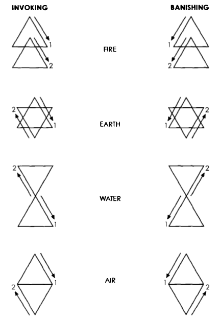

마법 입문
차례
서문제1장 소환과 초환
제2장 의식 구성
제3장 의식 마법사가 되기 위한 준비
제4장 미들필라 의식과 결계 의식
제5장 명상
제6장 퍼스널 에너지
제7장 우주의 구조와 아스트랄계
제8장 아스트랄 투사
제9장 아스트랄 행법
제10장 카발라
제11장 마법 장비
제12장 달 초환
제13장 카발라 마법 양식
제14장 수성 초환
제15장 아뮬레트와 탈리스만
제16장 금성 초환
제17장 타로
제18장 태양 초환
제19장 성찬 의식
제20장 입문식
역자 후기
부록1 히브리 신 이름
부록2 이집트 신 형상
부록3 미현자 초환
부록4 요가의 기초
참고 도서
찾아보기
서문
그리모아(grimoire)라는 것은 본래 의식(儀式) 마법의 텍스트를 일컫는 단어이다. 그것은 사람들에게 의식을 행하는 방법을 가르치거나 아니면 단순히 수많은 의식들의 개요만을 나열한다. 현대의 그리모아인 이 책에서는 두 가지 모두다 포함되어 있다.필자가 이 책을 쓴 의도는 독자들에게 의식 마법의 수행에 효과적이고 실용적인 입문서를 제공하는 것이다. 본서의 전반부는 초보자들을 위한 것이기 때문에 어떤 장(章)들은 오랫동안 진지하게 탐구해온 학인들에게는 너무 기초적인 것으로 보일지도 모르겠다. 그러나 이 책에는 전문가들에게도 유용한 많은 부분들이 있다. 사실 달인들에게도 기본적인 자료는 필요하다. 특히 다른 사람들을 가르치는 입장이라면 더욱 그러하다.
말할 것도 없이, 이 책에 설명된 의식들을 실제로 행한다는 것은 무척 힘들다. 어떤 사람들에게는 그것들을 성취하고자 하는 동기도 마음도 없을 것이다. 그러나 하고자 하는 의지를 가진 사람들에게는, 전에는 꿈도 꾸지 못했던 세계, 이제껏 드러나지 않았던 비밀들이 기다리고 있다. 우주의 신비들이 바로 우리의 발 아래 놓여 있다. 우리는 단지 허리를 굽혀 손을 뻗치기만 하면 되는 것이다.
이 책에 쓰인 자료들은 '황금새벽회'의 마법체계, 맥그리거 매터즈, 알리스터 크로울리, 엘리파 레비, 존 디 등의 저서, 그리고《솔로몬의 열쇠(The Key of Solomon the King)》를 비롯한 여러 유명한 그리모아들에서 발췌한 것이다.
마법을 배우고자 하는 사람은 여러 권의 노트와 종이, 필기 도구를 준비해야 한다. 이것들은 모든 마법실험과 그 결과들을 꼼꼼히 기록하기 위해 필요하다. 노트에는 실행한 모든 마법 의식들, 날짜, 시간, 흥미로운 꿈에 대한 상세한 메모, 아스트랄 체험 등을 기록해야 한다. 여기에는 결과, 계시, 발생된 사건, 명상중에 겪은 경험, 마법적으로 관련된 체험들도 포함된다. 마법 의식들을 행할 때는 날짜, 시간, 실행 양식 등만 기록해서는 안 된다. 여러 권의 노트를 준비한 뒤 당신이 행한 모든 의식들의 상세한 개요를 꾸준히 적어놓아야 한다. 의식 마법을 배우는 사람들은 마치 학생과 같아야 한다. 그러므로 이 책에서 제공된 자료들은 시험공부를 하듯 익혀야 할 것이다.
제1장
소환과 초환
의식 마법의 최고 행법은 소환(召喚, evocation)과 초환(招喚, invocation)이다. 사전적인 정의에 의하면 두 단어는 모두 '(정령 따위를) 주문으로 불러낸다'는 매우 비슷한 의미를 지녔다. 그러나 실제에 있어서 두 단어는 매우 다른 뜻을 지니고 있다. 사실 두 단어는 모두 인간이 아닌 존재들과의 교류행위와 관련되어 있다.
그러나 소환술과 초환술에서 다루어지는 대상 존재들의 종류와 교류방식은 매우 다르다. 양자의 차이를 진정으로 이해하기 위해서는 하이어라키(hierarchy, 존재등급)의 개념을 이해할 필요가 있다.
하이어라키는 의식을 지닌 존재들의 명령계통이다. 군대에서 명령계통은 권력의 순위에 따라 집행서열을 나타내는 계급체계이다. 마법의 세계에서 가장 높은 권위는 신이다. 존재등급의 서열은 신, 반신(半神), 대천사, 천사, 인간, 그 밑에 정령, 데몬, 아크데몬(archdemon)이 있다. 아크데몬 밑에는 매우 더럽고 혐오스러운 존재들이 또 있지만 현재로선 학인들이 관심을 가질 계제가 아니다.
물론 공부를 많이 한 학인들은 하이어라키에 대한 이런 설명에 당장 불만을 품을 것이다. 그러나 이 설명은 초보자들이 지극히 추상적인 개념을 이해할 수 있도록 하기 위한 것일 뿐이다. 진정한 하이어라키는 <표1>에 묘사된 단순한 사다리 골격보다 훨씬 더 광대하고 복잡한 체계이다.
이 하이어라키 체계를 보면 초환은 인간보다 상위의 존재들과의 교류, 소환은 인간보다 하위의 존재들과의 교류를 의미한다는 걸 알 수 있다. 교류방식의 차이라면 초환은 상위의 존재들을 초청하여 간구(懇求)하는 것이고, 소환은 하위의 존재들을 불러내 명령하는 것이다. 초환술에는 정중함, 사랑, 간구, 승화 등이 요구되는 반면 소환술에는 강제, 협박, 경멸, 저주 등의 방법이 사용된다.1 결국 초환은 천상의 영향을 매직 서클(마법의 원) 안으로 들여오는 반면 소환은 데몬을 강제로 매직 트라이앵글(마법의 삼각형) 안으로 불러오는 것이다. 그러므로 초환과 소환은 고급 마법 상의 매우 상이한 행법이라는 걸 분명히 알 수 있을 것이다.2
표1. 하이어라키의 사다리
흔히 마법(매직)은 고급 마법과 저급 마법의 두 범주로 나뉘어진다. 많은 저자들이 이 '고급' 또는 '저급'의 명칭이 쓰이는 기원과 의미에 대해 여러 설들을 주장한다. 어떤 이들은 실행자의 신분에 따라 저급과 고급이 갈라진다고 말한다.
즉, 권위 있는 궁정마법사가 강철과 황금으로 된 도구들을 사용하여 의식 마법을 행하면 고급 마법이 되고, 반대로 가난한 신분(가령 마녀)에 있는 자가 빈약한 환경에서 목기와 식물 뿌리, 약초 등 숲에서 쉽게 구할 수 있는 도구들을 사용하여 마법을 행하면 저급 마법이 되는 것이다. 만일 이것이 옳다면 '위치(witch)'는 고급 마법을 행할 수 없다는 말이 되는 것이다. 결국 이에 대한 마법의 저급, 고급의 구분은 편견일 뿐이다. 오늘날 알려진 위치크래프트(witchcraft), 즉 위카(wicca)3는 이방의 자연종교라고 설명될 수 있다.
요즘 위카는 대중적인 인기를 누리고 있는데, 이는 수세기 동안 이교의 실천을 사탄적인 것으로 규정했던 저 악명 높은 위치크래프트 볍률의 폐지(1951년)에 힘입은 바 크다. 제랄드 가드너, 도린 벨리언트, 시빌 리크와 같은 위칸(wiccan)들의 근원적인 저작들에 언급된 내용들은 그리 틀린 말이 아니다. 뿐만 아니라 위카 신앙의 배경은 의식 마법의 실천적 지식과 이해를 위한 훌륭한 토대이기도 한다.
고급 마법과 저급 마법의 실제적 구분은 다음의 기준에 바탕되어야 한다.
1) 저급 마법은 물질계에 효과를 발생시키기 위해 행해진다. 여기에는 사랑, 돈, 행운, 풍작, 치유, 저주 등을 위한 주문처럼 물질계의 삶에 영향을 미치는 술법들이 포함된다.
2) 고급 마법은 기본적으로 소환술과 초환술로 구성된다. 이 행법들은 고급계, 즉 마음의 세계에 영향을 미친다. 그것들은 실천자로 하여금 감정적, 정신적, 영적으로 진화할 수 있게 해준다. 물론 그중 가장 중요한 것은 마법적인 발전이다.
고급 마법의 결과는 훨씬 더 큰 힘을 갖고 있기 때문에 정확히 행해지지 않았을 경우 그만큼 큰 재앙과 위험을 초래할 수 있다. 저급 마법의 경우, 설령 실패하였다 해도 단순한 불쾌감이나 작은 고통의 반향이 따를 뿐이다. 그러나 고급 마법의 실행이 실패했을 경우 영적, 감정적 퇴보, 정신분열, 정신이상, 정신착란 등의 결과를 유발할 수 있다. 이러한 이유로 의식 마법을 공부하는 사람들은 충분한 준비기간(대략 1년)을 가져야 한다. 미래의 의식 마법사를 꿈꾸는 초보자는 이 기간 동안 주요한 마법 서적들을 집중적으로 공부하고 이 책의 4장에서 9장에 걸쳐 나오는 행법들을 공부하도록 해야 한다.
제2장
의식 구성
일반적으로 말해 고급 마법의 모든 의식은 다음의 네 시기로 이루어진다. 창설, 준비, 실행, 결과, 창설기는 실행자 개인에 의해 의식이 창설되거나 아니면 고대나 현대의 의식을 발견하는 것으로 시작된다. 그러니까 창설기는 마법사가 처음으로 '어떠한 의식을 실행해야지' 하고 의식하는 시점에서 시작되어 의식이 세부적으로 종이 위에 완전히 설계되었을 때 끝나게 된다. 그리고 다음 시기 동안 그것을 공부하고 암기하게 되는 것이다.
준비기는 적절한 장소 찾기, 의식에 쓰일 준비물 수집, 의식 구문의 세부사항 암기로 구성된다. 그리고 의식의 실행에 가장 좋은 점성학적 날짜와 시간을 선택해야만 한다. 많은 의식들에는 단식과 성적인 절제, 길고 고독한 명상 기간, 헌신, 매일의 결계(結界)4 수련 등이 욕된다. 준비기는 의식 공간의 구축과 더불어 끝나게 된다. 의식 공간은 마법을 실행하기 24시간 전에 완성되어야 한다-이것은 최장시간이다. 이보다 앞서 구축되면 안 된다.
다음은《솔로몬의 열쇠》에서 발췌한 매직 서클(원진圓陳) 구축 의식들이다.
원진의 준비와 구축(構築)을 위한 장소를 선택하고 실행에 필요한 모든 재료들을 준비하라. 시클(마법용 작은 낫)이나 시미터(초승달 모양의 마법 검)5를 쥐고 원진의 중심점에 꽂아라. 길이 2.7미터 실의 한 끝을 시클에 묶고, 다른 끝을 검은 손잡이로 된 마법 검에 고정시킨 뒤 원주를 그려라. 그런 뒤 원 안에 동서남북 네 영역을 구획하라. 이 원의 외부에, 축성(祝聖, 종교의식에 쓰일 물건을 거룩하게 하는 것)된 마법 검으로 또 하나의 원을 그려라. 그러나 이 원에는 북쪽으로 열린 공간을 남겨라. 그곳을 통해 원진이 출입하게 된다. 이 원 30센티미터 밖에 다시 원을 그린다. 여기에도 마찬가지로 북쪽에 출입구를 남겨라. 이 원 30센티미터 밖에 다시 또 하나의 원을 그려라. 이 두 원의 밖에 창조주의 심벌과 이름들이 있는 펜타그램을 그려라. 그리고 이 원들과 펜타그램들을 둘러싸는 사각형을 그려라. 그 사각형 둘레에 또 하나의 사각형을 그려라. 앞의 사각형의 네 모퉁이가 뒤의 사각형 각 변의 중심점과 접하게 그린다. 그러면 사각형의 모퉁이에 있는 네 천사들이 우주의 사방위(동서남북)를 향해 뻗어나가게 될 것이다. 그 뒤 각 사각형의 네 꼭지점에 접하는 작은 원들을 그려라. 이 원들 안에는 숯이나 향을 피울 향로를 놓아라.
이 작업이 끝나면 스승 마법사는 제자들을 모은 뒤 그들을 격려하고 자신감을 심어주고 힘을 북돋워 준다. 그리고 그들을 마법원 안으로 인도한 뒤 우주의 네 방위를 향하도록 배치시킨다. 두려움을 갖지 않도록 격려하고 각자 배당된 장소를 지키게 한다. 각자에게 마법 검 이외에 또 하나의 검을 지니게 한다. 검은 맨손으로 쥐어야 한다. 그리고 나서 마법사는 원을 떠나 향로들에 불을 붙여 그 위에, '훈향(燻香) 장(章)'에 나온 대로, 축성된 향을 놓는다. 그리고 손에 향로를 들고 준비된 장소에 놓는다. 그리고 나서 원 안으로 들어온 뒤 조심스럽게 출입구들을 닫는다.
다시 마법사는 제자들의 주위를 환기시키고, 관련 장에 설명된 대로, 준비된 의식용 나팔을 든다. 그리고 우주의 네 방위를 향해 원에 훈향한다.
그런 다음 마법사는 주문을 시작한다. 이때 마법 장비들(시클, 검 등)을 그의 발 옆 바닥 위에 세워놓는다. 전에 배운 바대로 나팔을 불어 영들을 일깨운다. 그리고 1권에서 언급된 것처럼, 필요하다면 영들을 불러낸다. 그리고 원하는 결과를 얻었다면 그들을 풀어준다.
여기서는 <표2>의 매직 서클 형태를 따른다. 그 속에 들어간 사람은 마치 견고한 성 안에 있는 것처럼 안전하고 그 어떤 것도 그를 해할 수 없게 된다.
표2.《솔로몬의 열쇠》에 나온 매직 서클
2권에 나오는 순서와 방식에 따라 축성된 마법 나이프, 시클 또는 검을 가지고 원을 그린다. 그리고 이 원 밖에 30센티미터 간격을 두고 동심원을 그려라. 첫 번째 원과 두 번째 원 사이 공간에 동서남북 방위에 맞춰 성스러운 문자 타우의 거룩한 심벌을 그린다. 그리고 마법 장비로 세 번째 원을 그린 뒤 그것과 두 번째 원 사이에 네 개의 이중 삼각형을 그린다. 그리고 그 이중 삼각형들 사이에 다음과 같이 경외스런 신의 이름을 쓴다.
동쪽과 남쪽 사이에는 최고의 이름 IHVH(테트라그라마톤)
남쪽과 서쪽 사이에는 절대적인 사문자 이름 AHIH(에흐예)
서쪽과 북쪽 사이에는 힘의 이름 ALIVN(엘리온)
북쪽과 동쪽 사이에는 위대한 이름 ALH(엘로아)6
이 이름들은 일련의 세피로트에 대응되는 주권자로서 지극히 중요한 의미를 가진다.
그리고 이 원들을 둘러싸는 두 개의 정방형 사각형을 그린다. 이때 사각형 네 모퉁이의 천사들이 사방위를 향하도록 그린다. 두 사각형은 15센티미터 정도 간격을 둔다. 외부 사각형의 꼭지점들을 중심점으로 하여 직경 30센티미터 정도의 원을 그려 천사들이 그 중심에 놓이게 한다. 이것들은 모두 축성된 나이프나 기타 마법 장비들로 그린다. 이렇게 하여 그려진 네 개의 원 안에 지극히 거룩하신 신의 이름을 쓴다.
동쪽에는 Al(엘)
서쪽에는 IH(야)
남쪽에는 AGLA(아글라)
북쪽에는 ADNI(아도나이)
원을 그리기 전이나 그리는 동안 스승은 시편 2편, 54편, 112편, 67편, 47편, 68편을 낭송한다.
이상의 과정을 다 마쳤으면 2권에 나온 대로 훈향(燻香)한 뒤 스승이 제자들을 모아 그들을 격려하고 힘을 북돋워서 매직 서클 속으로 들어가게 인도한다. 스승은 제자들을 사방위에 배치시키고, 두려워할 것 없다고 용기를 준 뒤 각자의 자리를 지키도록 한다.
동쪽을 향하고 있는 제자는 펜, 잉크, 종이, 실크, 흰 면을 갖고 있어야 한다. 이것들은 작업을 위해 정결하게 마련된 것이어야 한다. 또 제자들은 각각 손에 새 검(축성된 마법 검 이외에)을 쥔 채(자루를 손에 잡은 상태로) 어떤 일이 있어도 그 자리를 떠나서는 안 된다.
표3.《솔로몬의 열쇠》에 나온 매직 서클
그 후 스승은 원을 떠나 도제 단지들에 연료를 피우고 그 위에 향로들을 놓는다. 이것들은 네 방위에 맞추어 놓는다. 그리고 손에 축성된 왁스 초를 쥐고 그것에 불을 붙여 미리 준비한 은밀한 곳에 갖다놓는다. 그리고 나서 원으로 다시 들어와 입구를 닫는다.
스승은 제자들을 다시금 격려하며 각자가 해야 할 일들을 설명해주고 그 지시를 엄수할 것을 다짐받는다. 그리고 나서 스승은 이 기도를 반복한다. <1권 3장>
이런 식으로 두 개의 기도와 한 번의 주문을 행한 뒤 의식이 다 끝나게 된다. 이것은《솔로몬의 열쇠》에서 설명된 의식들을 행하기 전에 실행되어져야 할 많은 어려운 작업들 중 하나에 불과하다. 이 고대 그리모아에 설명된 모든 요구사항들은 솔로몬의 마법을 시도하기 전에 반드시 충족되어야 한다. 그렇지 않으면 결과 또한 그 불완전을 반영하여 나타나게 되며, 어쩌면 재앙이 일어날 수도 있다. 이런 이유 때문에 대부분의 사람들에게 있어서 이 그리모아는 비실용적인 것이라 할 수 있다.
그러나 일반적인 마법의 경우, 준비기의 어려움 때문에 의식의 실행을 늦출 필요는 없다. 마법의 실행을 위한 장소를 찾고 준비물들을 만들고 의식을 암기하는 데 몇 주 또는 몇 달이 걸릴 수도 있다. 그러나 그 준비에 쏟은 노력은 의식(儀式)의 파워를 강화시키는 역할을 한다. 그 에너지의 발생은 창설과 더불어 시작되고 의식이 끝난 뒤에도 계속된다. 실행자의 결연한 의지는 의식의 성공을 위한 열쇠이다. 마법의 실행을 위한 준비과정은 의식 구성에 있어서 가장 중요한 부분이기 때문에 이 책의 다음 장에서 매우 상세히 다루게 될 것이다.
의식의 실행은 점성학적으로 길한 영향이 미치는 특정한 날짜와 시간을 미리 정한 뒤 그때 시작한다. 본격적인 의식에 앞서 마법사는 의식 장소 밖에서 먼저 목욕재계를 한다. 전통적으로 소량의 히솝풀(hyssop, 우슬초)로 처리된 천연수(샘물이나 바닷물)을 이용한다. 그리고 그 천연수에 특정한 허브 오일을 넣는데, 그것은 의식의 종류에 따라 달라진다. 이 목욕재계 행위는 마법사를 정화하는 의미를 지닌다. 마법사는 목욕하는 동안 때때로 다음과 같은 정화 스펠(주문)을 외워야 한다.
아스페르게스 메, 에흐예, 히소포, 에트 문다보르, 라바비스 메, 에트 수페르 니벰 데알바보르.
다음은 의식의 두 번째 행위이다. 목욕재계 후 의상을 입기 전에 마법사는 오른손 인지(집게손가락)에 아브라멜린 오일을 발라 가슴 위에 장미십자가 사인을 그린다. 그러면서 아래의 축성 스펠을 외운다.
악센다트 인 노비스 아도나이 이그넴 수이 아모리스 에트플라맘 아에테르나에 카리타티스.
의상은 의식 장소로 들어가기 전에 입어야 한다. 비입문자의 경우 면이나 실크로 된 검은 옷이 적절하다. 그리고 모든 마법 무기들과 장비들은 미리 준비되어 있어야 한다. 그것들을 미리 원진 안의 제단 위에 놓아둔다. 제단이나 의상을 비롯하여 모든 마법 무기와 장비들은 미리 정화하고 축성해야 한다. 마법 장비들 하나하나마다, 정화 스펠을 외우면서 히솝풀 처리가 된 천연수를 흩뿌린 뒤 축성 스펠을 외우면서 아브라멜린 오일로 문질러 준다. 이 과정들은 마법을 실행하기 열두 시간 이내에 다 마쳐야 한다. 자세한 것은 11장에 나와 있다.
의식의 세 번째 행위는 결계(結界) 의식을 실행하는 것이다. 결계 의식들에 대해서는 4장에 설명되어 있다. 이상의 세가지 행위는 주 의식이 이루어지기 전에 행해지는 것이다.
예비작업, 주 의식, 마감작업은 모두 퍼포먼스이기 때문에 극적으로 힘있게 실행되어야 한다. 그러므로 의식이 행해지는 장소는 그런 요건에 알맞은 곳이어야 한다. 속삭이는 소리로 주문을 외우는 것이 아니므로 이웃에 방해가 되지 않는 곳이어야 한다.
의식의 마지막 행위는 마감 결계 의식, 영들의 방면, 신전 폐쇄이다. 이로써 의식이 완성되게 되는데, 전통적으로 마법 단검 자루로 제단 위를 한 번 치는 것으로 끝낸다. 그 후 마법사는 원전을 떠난다. 그리고 최소한 한 시간이 지난 두에 돌아와서 모든 의식의 증거들을 없애고 다시 한 번 결계 작업을 통해 그 장소를 정화한다.
네 번째 시기는 마지막 퍼포먼스가 행해지고 난 순간부터 시작된다. 이때 가장 중요한 점은 의식의 결과에 대해 생각해서는 안 된다는 것이다. 소망하는 결과는 의식의 창설 과정에서 별도의 페이지에 적어놓고 감추어둔 채 잊어버린다. 그리고 의식의 결과를 체험한 후 그것을 다시 꺼내 실제의 결과와 비교해본다. 그리고 나서 실제의 결과를 기록한다. 그러면 마법 노트에는 기대 결과와 실제 결과가 별도의 페이지에 기록되는 것이다.
준비기와 퍼포먼스 동안 은근히 어떤 결과를 기대하면 그로 인해 실제 결과가 실현되는 것을 방해하거나 그것을 바꾸어 놓는다는 사실을 깨달아야 한다. 그것은 사실상 실험을 망쳐놓는 행위이다. 결과는 창설기의 첫 순간에 소망된 것이어야 한다. 그러나 자칫 본래 소망했던 결과에서 벗어난 생각을 하게 되면 마법의 작용은 실패로 돌아가게 된다. 이런 이유로, 일단 소망을 그렸으면 그 다음 모든 에너지를 의식의 퍼포먼스에만 집중하는 것이 바람직하다.
제3장
의식 마법사가 되기 위한 준비
마법 의식의 성공은 그것을 실행할 수 있는 준비 정도에 달려 있다. 준비상태가 완전하지 않다면 성공하지 못할 것이다. 아무리 사소하다 할지라도 미비한 것이 있다면 그 작용은 실패하게 될 것이다. 마법 의식을 행할 때 모든 것이 완벽해야만 한다는 것에는 의심의 여지가 없다. 불완전한 점은 의식(儀式)이 진행되는 과정에서 더욱 커지게 될 것이다. 그러므로 마법을 실행하기 전에 모든 것들이 완벽한 상태여야 한다.
의식, 특히 소환 의식에서는 체력이 중요하다. 그러므로 의식을 실행하기 전에 육체를 단련해야 한다. 체중이 너무 나가거나 모자라면 건강에도 좋지 않지만 마법적으로도 좋지 않다. 마법사는 매일 충분한 비타민을 섭취하고 규칙적으로 운동하고 적절한 체중을 유지해야 한다. 또 쉬지 않고 1~2킬로미터 정도 달리고, 자신의 체중에 적당한 무게의 바벨을 무리없이 가슴까지 들어올릴 수 있는 체력이 있어야 한다. 이것들이 필수조건은 아닐지라도 이상적인 상태임은 두말할 필요가 없다.
의식 마법을 시작하기 위해서는 충분한 시간 동안 준비를 해야만 한다. 준비도 되지 않은 상태에서 의식을 치르는 것은 무모하고 위험할 뿐만 아니라 나중에 후회할 소지가 크다. 마법은 경솔하게 시작할 그런 행위가 아니다. 그것은 기본적으로 평생에 걸쳐 공부해야만 하는 헌신을 요구한다. 신화적인 모든 위대한 마법사들이 지긋한 노령의 모습으로 그려지는 것은 우연이 아니다.
학인들은 무수한 실패를 감내해야만 비로소 작은 성공이나마 거둘 수 있다. 그러므로 확고한 의지를 추진력으로 삼아야 한다. 수년 동안의 공부와 실천이 따라야만 비로소 최소한의 고무적인 결과를 얻게 될 것이다. 그리고 때가 되면 마침내 성공적인 결과를 이루게 될 것이다.
모든 의식 마법사들은 마법명을 가지고 있다. 그것은 마법을 행하는 자신의 의도나 목적을 가장 잘 표현하는 짧은 문장이나 한 단어로 이루어진다. 그 단어나 문장이 히브리어, 라틴어, 그리스어 등 강한 마법 전통을 지닌 언어로 표현되면 더욱 인상적으로 들린다.
예를 들어 맥그리거 매터즈7는 '데오 두케 코미테 페로(나의 인도자 하나님, 나의 벗 마법 검과 함께)', 아서 E. 웨이트8는 '사크라멘툼 레기스(왕의 신비)', 알리스터 크로울리9는 '페르두라보(나는 끝까지 인내하리라)' 앨런 베넷10은 '이에히 아우르(빛이 있으라)'라는 마법명을 가지고 있었다.
이 길을 내딛는 당신의 첫 발걸음, 즉 준비는 지극히 어렵다. 이 책에 나오는 가르침을 따른다면 당신은 '지혜의 뱀'의 길에 확고한 기반을 두게 될 것이다. 마법이 예술과 학문에 전념할 수 있도록 심신을 준비하려면 알맞은 행법을 실천하고 적절한 텍스트를 읽어야 한다. 어떤 면에서 보면 의식 마법은 예술과 과학, 두 요소들의 결합으로 이루어진다.
예술적인 요소
1) 의식, 주문 등을 쓰기;
2) 의식의 실행(퍼포먼스);
3) 마법 장비 만들기;
4) 탈리스만(인장 또는 부적) 그리기;
5) 창조적인 심상화 작업;
6) 말(words)의 진동;
7) 색깔, 냄새, 소리 등의 이용.
과학적인 요소
1) 다양한 관련 학문(카발라 등) 연구;
2) 마법 공식 분석;
3) 카발라의 수학(數學), 게마트리아 연구;
4) 점성학 연구;
5) 고대 철학, 이교 철학 연구;
6) 연금술 연구;
7) 다양한 화학원소와 그 힘의 활용.
예술과 과학, 양자에 공통적으로 포함시킬 수 있는 분야는 찾아보기 그리 쉽지 않다. 왜냐하면 대개 이 둘은 서로 상반되기 때문이다. 그러나 이 양자를 결합시킴으로써 각각 개별적으로 분리되었을 때보다 훨씬 더 큰 힘이 만들어진다. 마법의 효과는 피상적으로 무관해 보이는 많은 요소들을 결합시킴으로써 나오게 된다. 사람들에게 있어서 이 결과들은 기적적인 것처럼 보인다.
그러나 마법사는, 그것들이 원인과 결과의 법칙에 기초한 자연적인 작용임을 알고 있다. 인간들은 이 법칙들을 의식하지 못한다. 왜냐하면 배우지 않았기 때문이다. 따라서 이 책을 계속 읽어나간다면 당신은 그 법칙들을 알게 될 것이다.
추천도서 오늘날 의식 마법의 교재로 사용될 수 있는 책들은 다음과 같다.《의식 마법의 서(The Book of Ceremonial Magic)》(아서 E. 웨이트), 4(book 4)》(알레스터 크로울리), 이론과 실제(Magick in Theory and Practice)》(알레스터 크로울리),마법(Transcendental Magic)》(엘리파 레비),, 천상의 통신원(The Magus of Celestial Intelligencer)》(프랜시스 배렛).11
이 책들을 공부하는 데는 말 그대로 수년의 시간이 소요된다. 이것들을 공부하는 동안 노트를 마련하여 관련 사항들, 느낀 점, 해석, 깨달은 점 등을 기록하는 것이 좋다. 매일 한 두 시간씩 공부하되 어떤 한 부분에만 너무 오래 머물지 않는다. 왜냐하면 그 내용을 완전히 이해할 수 있을 때까지 앞으로 수년 동안 반복해서 여러 차례 읽어야 할 것이기 때문이다. 당신은 이 책들을 시험 준비하듯 노트에 적어가며 진지하게 공부해야 한다. 마법을 배우고자 한다면 충분한 지식을 갖추어야 한다. 그렇지 않으면 후회하게 될 것이다.
이 책들은 가볍게 읽을 수 있는 것들이 아님을 당신은 곧 깨닫게 될 것이다. 한 번에 10쪽 이상 읽지 말라. 그리고 중간에 숙고하는 시간을 가져 떠오르는 생각이나 아이디어 등을 기록하라. 필요하다면 한 부분을 두 번이나 세 번 읽어라. 의미 있는 문장이나 이해하지 못하는 문장에 밑줄이나 표시를 해두었다가 나중에 다시 살펴보도록 하라.
기타 추천도서
《아스트랄 투사, 의식 마법 그리고 연금술(Astral Projection, Ritual Magic & Alchemy)》(맥그리거 매터즈)
《광휘의 서(The Book of Splendours)》(엘리파 레비)
《의식마법(Ceremonial Magic)》(이스라엘 리거디)
《황금새벽회 전(全) 마법 체계(The Complete Golden Dawn System of Magic)》(이스라엘 리거디)
《오컬트 철학(Occult Philosophy)》(코르넬리우스 아그리파)
《황금 가지(The Golden Bough)》(제임스 프레이저)
《황금새벽회(The Golden Dawn)》(이스라엘 리거디)
《마법, 인도 마법, 인도 오컬티즘 대전(大典)(The Great Book of Magical Art, Hindu Magic & Indian Occultism)》(L. W. 드로렌스)
《마법의 역사(The History of Magic)》(엘리파 레비)
《마법의 부흥(The Magical Revival)》(케네스 그랜트)
《필승 마법(Magick Without Tears)》(알리스터 크로울리)
《근대 의식 마법(Modern Ritual Magic)》(프랜시스 킹)
《자연 마법(Natural Magic)》(존 B. 포터)
《마법의 비밀 전승(The Secret Lore of Magic)》(이드리스 샤)
《고급 마법의 테크닉(Techniques of High Magic)》(프랜시스 킹)
《777 그리고 기타 카발라 저술들(777 & Other Qabalistic Writings)》(알리스터 크로울리)
저명한 고대 그리모아의 현대 재판본들
《마법의 아르바텔(The Arbatel of Magic)》(로버트 터너 옮김)
《마법사 아브라 멜린의 신성 마법의 서(The Book of the Sacred Magic of Abra-Melin the Mage)》(맥그리거 매터즈 옮김)
《솔로몬의 열쇠(The Key of Solomon the King)》(맥그리거 매터즈 옮김)
《아르마델의 그리모아(The Grimoire of Armadel)》
《레메게톤(Lemegeton)》(넬슨 화이트 & 앤 화이트 옮김)
《괴티아, 솔로몬의 소(小) 열쇠(The Goetia of Lesser Key of Solomon the King)》(알리스토 크로울리 옮김)
《튜리엘의 비밀 그리모아(The Secret Grimoire of Turiel)》(마리우스 말쿠스 옮김)
《모세의 제6, 제7서(The Sixth & Seventh Books of Moses)》(L. W. 드 로렌스 옮김)
《호누리우스의 맹약의 서(The Sworn Book of Honou-rius)》(다니엘 드리스콜 옮김)
이 그리모아들은 흥미로운 읽을거리를 제공한다. 그러나 거기에 적힌 대로 필요한 모든 도구들을 구하여 세부 사항들을 정확히 실행할 수 없는 한, 그 안에 묘사된 의식들을 실행하는 것은 삼가는 것이 좋다. 사실상 거기 씌어진 마법의 실행은 거의 불가능하다. 왜냐하면 대부분의 이 그리모아들은 수백 년 전에 씌어진 것이고, 오늘날 구할 수 없는 재료들도 있기 때문이다.
제4장
미들필라의식과 결계의식
진지한 마법사는 매일 규칙적으로 특별한 의식들을 실행한다. 이 장(章)에서는 다섯 개의 의식들에 대한 개요를 다루게 된다. 미들필라(중간기둥)의식, 소(小) 펜타그램 결계 의식, 소(小) 헥사그램 결계 의식, 서펜트 결계 의식, 스타 루비 등이다.
먼저 미들필라(Middle Pillar) 의식에 대한 공부를 시작한다. 이 의식을 암기한 뒤 마법 노트에 기록한다. 한 달 동안 매일 아침저녁으로 이 의식을 행한다. 그리고 그 한 달 동안 소 펜타그램 결계 의식(The Lesser Banishing Ritual of the Pentagram)을 배우고 암기한 뒤 노트에 옮긴다. 첫 한 달이 지난 뒤, 하루에 두 번씩 미들필라 의식 바로 전에 이 의식을 실행한다. 역시 기간은 한 달이다.
두 번째 달은 소 헥사그램 결계 의식(The Lesser Banishing Ritual of the Hexagram)을 암기하고 기록한다. 그리고 세 번째 달에 들어서면서 매일 오후에 그 의식을 행한다. 이 기간에도 앞서의 두 의식은 매일 두 번씩 계속 행한다. 이 과정은 서펜트 결계 의식(The Banishing Ritual of the Serpent), 스타 루비(Star Ruby)에 있어서도 마찬가지다. 결과적으로 당신은 이 다섯 개의 의식을 한 달 동안 매일 최소 한번씩 행하게 된다. 꾸준히 스케줄을 유지하며 매일 같은 시간에 각각의 의식들을 행한다. 이것들은 비교적 짧은 의식들이므로 전부 합쳐도 하루 약 한시간 정도밖에 소요되지 않는다.
이 의식들에 사용되는 단어들 중에는 발성할 때 진동을 시켜야 하는 것들이 있다. 음악가나 음악을 좋아하는 사람들은 음(音)의 물리적 공명에 대해 잘 알고 있다. '음악은 야수도 달래는 힘이 있다'는 오랜 속담도 있듯이, 사람들은 훌륭한 음악을 들으면 기분이 좋아진다. 성악가 중에는 고음을 발성하여 유리를 깨뜨리기도 한다.
목소리를 진동시키는 능력은 '공명'으로 알려진 음질에 달려 있다. 그것은 큰 소리로 말한다고 되는 것도 아니고, 바이브레이션을 내려고 무조건 애를 쓴다고 되는 것도 아니다. 바이브레이션을 일으키기 위해서는 후두의 특이한 진동에 의한 소리와 고저의 변화가 필요하다. 많은 경우 바이브레이션은 숨을 깊이 들이마시고 천천히 내쉬면서 가장 높은 고음으로 소리를 낼 때 일어나게 된다. 이때 갑자기 날카로운 소리가 나기도 한다. 처음에는 그 소리가 매우 우스꽝스럽게 들릴지도 모른다. 그러나 중요한 것은 결과이다. 바이브레이션은 발성하는 동안 목에서 느껴져야만 한다.
이 책에 나오는 마법 의식들에서 진동을 일으켜야 하는 단어들은 진한 서체로 되어 있다. 이 발성단어들은 고대 히브리어(단, 스타 루비에 나오는 단어들은 그리스어)로서 대개는 신의 이름, 힘의 말씀들이다. 이 단어들은 영어발음에 맞추어 표기되었다. 모든 문자는 각각 개별적으로 발성되어야 하지만, 음의 흐름에 따라 서로 합쳐져 한 단어가 된다.
의식에 사용되는 이름들에는 각기 상응하는 심벌들이 있는데, 그 이름의 발성과 심벌을 그리는 행위를 자신의 퍼스널 에너지와 결합하여 실행하면 특별한 효과들을 얻을 수 있다. 퍼스널 에너지에 대해서는 6장에서 자세히 논의할 것이기 때문에 여기서는 '오라를 구성하는 에너지' 정도로 알고 일단 넘어가도록 하자. 의식에서 심벌을 그릴 때 손가락 끝이나 칼끝으로부터 나타나는 허공의 선들을 그 에너지로 여겨야 한다.
결계 의식의 경우 자기 자신이나 주위로부터 사기(邪氣:사악한 기운), 특히 엘리멘탈 세력을 물리치게 된다. 엘리멘탈 힘들은 바람직하지 못한 방향으로 영향을 끼칠 수도 있다. 예를 들어 그들의 천성적인 불순함으로 당신의 퍼스널 에너지를 약화시키거나 희석시킬 수도 있다. 그러므로 의식을 행하는 동안 퍼스널 에너지를 정화시키기 위해 노력해야 한다.
펜타그램(오각별)이나 헥사그램(육각별)12 같은 고대의 심벌들의 기술적인 상징성의 문제를 간단히 말하기는 쉽지 않다. 이 부분에 대해서는 이스라엘 리거디13의《황금새벽회(The Golden Dawn)》에 자세히 설명되어 있다. 이 의식들은 고대의 전통을 갖고 있으며 정확히 실행되었을 경우 어김없이 효과를 발휘한다.
말할 필요도 없이, 당신의 퍼스널 에너지로 심벌들을 그리는 것은 그 에너지의 선들을 보는 것과 관련되어 있다. 이 의식들은, 당신이 그리는 심벌들이 화염으로 나타날 때까지 실행되어야 한다. 그 화염이 옆사람의 눈에 거의 가시화되어 보일 정도까지 말이다. 어떤 사람들은 이런 방식으로 실제로 불을 일으키는 능력을 얻게 되었다고 한다. 결계 의식에는 흔히 단검이 이용되는데 전통적으로 검은 손잡이의 양날 단검이 쓰인다.
에흐예(흰색)
에흐와 엘로임(연한 자주색)
에흐와 엘로아 베다트(황금색)
샤다이 엘 하이(자색)
아도나이 하 아레츠(흑색)
표4. 미들필라 의식
입구사인(베일 열기) 입구사인(베일 닫기)
하늘을 떠받치는 신 슈(공기) 토움 아에쉬 네이트 여신(불)
아우라모트 여신(물) 싸우는 세트 신(흙)
표5. 입구 사인과 이집트 신들(원소와 관련된)의 사인
살해당한 오시리스 슬퍼하는 이시스
아포피스와 티폰 부활한 오시리스
표6. 룩스(L.V.X) 사인들
푸에르(PUER) 비르(VIR)
푸엘라(PUELLA) 물리에르(MULIER)
표7. 녹스(N.O.X) 사인들
표8. 인보킹 펜타그램과 배니싱 펜타그램
표9. 장미십자가 사인
하르포크라테스 사인(침묵의 사인)
호루스 사인(입장자 사인)
표10. 하르포크라테스 사인과 호루스 사인
 표11. 원소 인보킹과 원소 배니싱
표12. 혹성 인보킹 헥사그램과 혹성 배니싱 헥사그램
미들필라 의식14
1) 두 팔을 옆으로 내려 바로 선 뒤, 정수리 위에 밝은 하얀색 에너지 구(球)가 이글거리는 것을 염상(念想)하라.
2) 이 에너지 덩어리가 점점 커지는 것을 느끼며 신의 이름 [에흐예](EHIEH)15를 발성한다. 이때 마음은 정수리 위에서 불타오르는 구에 집중한다. 당신이 신의 이름을 발성하는 동안 그 구의 힘이 증가하는 것을 느껴라.
3) 머리 위에서 왕관 차크라가 이글거릴 때 그 에너지가 밑으로 하강하는 것을 느껴라. 그리고 목 부위에 이르렀을 때 연한 자주색 불덩어리가 타오르는 것을 염상하면서 느껴라. 연한 자주색 에너지 구를 상상하라. 이 구는 에너지 선에 의해 머리 위에 있는 구와 연결되어야 한다.
4) 이 에너지를 보고 느낄 수 있을 때 신의 이름 [예흐와 엘로힘](YEHUWAU ELOHIM)을 발성하라. 그동안 마음은 목에 있는 에너지 구에 집중해야 한다. 이때 에너지 구가 계속 커지는 모습을 상상하라.
5) 이 두 구가 더욱 강렬한 힘을 발할 즈음 다시 한 번 그 에너지가 밑으로 내려오는 것을 느껴라. 황금색 에너지 구가 가슴 부위로부터 이글거리며 솟아나는 것을 염상하라. 이 세 개의 구는 모두 에너지 선에 의해 연결되어야 한다.
6) 이 에너지를 보고 느낄 수 있을 때 신의 이름 [예흐와 엘로아 베다트](YEHUWAU ALOAH VEDOTH)를 발성하라. 이때 마음은 가슴에서 빛나는 에너지 구에 집중해야 한다. 그 에너지 구의 힘이 강렬히 커지는 것을 느껴라. 다른 구들도 여전히 그 힘이 계속 증폭되고 있으며 서로 연결되어 있다는 것을 인식하라.
7) 앞서와 마찬가지의 과정을 음부에서도 행한다. 단, 에너지의 색깔은 보라색이며 신의 이름은 [샤다이 엘 하이](SHADAI EL CHAI)이다.
8) 발 부위에서도 마찬가지의 과정을 행한다. 단, 에너지 색깔은 검은색이며 신의 이름은 [아도나이 하 아레츠](ADONAI HA ARETZ)이다.
9) 이상의 모든 에너지 구들은 에너지 선에 의해 연결된 상태로 있어야 하며 그 강도와 힘은 계속 타오르며 성장해야 한다. 이 구들 사이에 흐르는 에너지를 느껴라. 그리고 그것을 몸 전체로 퍼지게 하며, 미풍처럼 피부에 와 닿아 당신 주위를 감싼다고 느껴라. 이렇게 하면 매우 기분 좋은 느낌이 된다. 원하는 만큼 오랫동안 그 상태를 유지하라.
소 펜타그램 결계의식16
1) 원의 중심에 서서 동쪽을 향하라.
2) 카발라 십자가 행법을 실행한다.
① 양손으로 단검을 쥔 뒤, [아타](ATOH)17라고 발성하면서 앞이마에 가볍게 댄다. 머리 주위와 위에 맑은 청광(靑光)이 빛나는 것을 염상하라.
② 에너지 선을 뚜렷이 염상하며 단검을 가슴 부위로 옮겨라. 그리고 [말쿠트](MALKUTH)라고 발성하라.
③ 단검을 오른쪽 어깨에 갖다댄다(이때 에너지 선을 뚜렷이 마음속으로 그린다). 그리고 [베 게부라](VE GEBURAH)라고 발성하라
④ 단검을 수평으로 옮겨 왼쪽 어깨에 갖다댄 뒤 [베 게둘라](VE GEDULAH)18라고 발성한다.
⑤ 단검을 가슴에 내려라. 단검 끝을 위로 향하게 한 채 [레 올람, 아움](LE OLAHM, AUM)19이라고 발성한다. 이제 당신은 몸 위에 그려진 십자가를 염상한다. 레올람, 아움을 발성할 때 당신은 맑은 청색 에너지 구에 의해 감싸인다고 생각하라. 이 에너지는 단검이 놓인 가슴으로부터 머리 위와 발 밑으로 동시에 뻗어나가 등뒤에서 연결되어 구를 형성하여 당신을 감싼다. 이 구는 카발라 십자가를 둘러싸게 된다.
3) 앞으로 나와 원의 동단(동쪽 끝)에 선다. [예흐와]를 발성하면서 오른손에 쥔 단검으로 당신 앞에 흙 원소 배니싱 펜타그램을 그린다. 이 펜타그램은 약 90센티미터 정도의 크기여야 한다. 펜타그램을 그린 뒤 양손으로 단검을 쥐고 그 중심에 찌른다.
4) 몸을 시계방향으로 돌려 원의 남단(남쪽 끝)으로 옮긴다. 이때 단검으로 선(원주)을 그리며 간다. 남쪽을 향한 뒤 [아도나이]를 발성하며 오른손에 쥔 단검으로 흙 원소 배니싱 펜타그램을 그린다. 그리고 나서 단검을 양손으로 쥔 채 그 중심에 찌른다.
5) 앞에서처럼, 선을 그리며 원의 서단으로 간 뒤 서쪽을 보고 선다. [에흐예]를 발성하는 동안 흙 원소 배니싱 펜타그램을 그리고 그 중심에 단검을 찌른다.
6) 앞에서처럼, 원의 북단으로 선을 그리며 간 뒤 북쪽을 보고 선다. [아글라]를 발성하는 동안 흙 원소 배니싱 펜타그램을 그린다. 그 중심에 단검을 찌른 뒤 다시 선을 그리며 동쪽의 펜타그램으로 돌아가 단검 끝을 그 중심에 댄다. 그리고 나서 원의 중심으로 돌아온 뒤 동쪽을 보고 선다. 이것으로 원의 껍질이 완성된다.
7) 이렇게 말한다. "나의 앞에 [라파엘](RAFAEL)이, 나의 뒤에 [가브리엘](GABRIEL)이, 나의 우측에 [미카엘](MICHAEL)이, 나의 좌측에 [아우리엘](AURIEL)이 계신다. 나의 앞에 오각별이, 나의 뒤에 육각별이 불타오르고 있도다."
8) 중심에 그대로 선 채 카발라 십자가 행법을 다시 한 번 반복한다.
소 펜타그램 결계의식20
1) 원의 중심에서 동쪽을 보고 선다.
2) 오른손에 단검을 쥐고 끝을 위로 향하게 한 뒤 가슴 높이에 댄다. 왼손은 옆으로 늘어뜨린다. 그리고 나서 다음과 같이 말하면서 I.A.O 분석을 실행한다.
요드, 눈, 레쉬, 요드
처녀궁, 이시스, 위대한 어머니
천갈궁, 아포피스, 파괴자
태양, 오시리스, 죽었다 부활한 자
이시스, 아포피스, 오시리스
이아오(IAO)
3) 룩스(L.V.X.) 사인을 행한다(이 신들에 상응하는 신 형상(<부록2>에 묘사됨)을 취하는 것이 도움이 된다. 신 형상을 취하는 것에 대해서는 8장에서 자세히 설명된다).
① 양팔을 수평으로 뻗어 몸 전체를 십자가 형태로 만든 뒤 "살해당한 오시리스 사인."이라고 말한다(<표6>을 보라).
② 오른팔을 수평으로 편 뒤 팔꿈치를 직각으로 굽혀(이때 팔의 전박(前膊, 하박. 팔꿈치에서 손목까지의 부분.)이 위로 향한다) 알파벳 L의 형태를 만들라. 왼팔은 옆으로 늘어뜨리고 있어야 한다. 머리는 왼팔 아래를 내려보고, 오른발을 약간 안쪽으로 돌린다. 그러면 발가락은 바닥에 닿고 발꿈치는 약간 들어올려진다. 그리고 나서 "슬퍼하는 이시스 사인."이라고 말한다.
③ 양팔을 위로 치켜들어 알파벳 V의 형태를 만들라. 이때 양발을 모아 발가락 끝으로 서고 머리는 뒤로 제친다. 그리고 "아포피스와 티폰 사인."이라고 말한다.
④ 양팔을 가슴 위에 교차(오른팔이 왼팔 위로 가게 한다)시켜 알파벳 X의 형태를 만든 뒤 머리를 숙여라. 그리고 나서 "부활한 오시리스 사인."이라고 말한다.
⑤ 3-①에서처럼 양팔을 뻗고 "룩스(L.U.X.), 십자가의 빛."이라고 말한다.
4) 원의 동단으로 걸어나가라. [아라리타](ARARITA)를 발성하면서 오른손에 준 단검으로 불 원소 배니싱 헥사그램을 그려라. 이 헥사그램의 크기는 약 90센티미터 정도여야 한다. 헥사그램을 그린 뒤 양손으로 단검을 쥔 채 그 중심을 찔러라.
5) 시계방향으로 몸을 움직여, 선을 그리면서(칼로 원주를 그리면서) 원의 남단으로 가라. 남쪽을 보고 [아라리타]를 발성하면서 오른손에 쥔 단검으로 흙 원소 배니싱 헥사그램을 그려라. 그런 뒤 양손으로 단검을 쥔 채 그 중심을 찌른다.
6) 몸을 시계방향으로 움직여 선을 그리면서 원의 서단으로 가라. 서쪽을 보고 [아라리타]를 발성하는 동안 공기 원소 배니싱 헥사그램을 그려라. 그리고 나서 양손으로 단검을 쥔 뒤 그 중심을 찌른다.
7) 앞에서처럼 몸을 시계방향으로 옮겨 선을 그리면서 원의 북단으로 간 뒤 앞(북쪽)을 보고 선다. 그리고 나서 [아라리타]를 발성하면서 물 원소 배니싱 헥사그램을 그려라. 그 중심에 단검을 찌르고 시계방향으로 움직여 선을 그리면서 동쪽의 헥사그램으로 돌아온다. 단검을 그 중심에 찌른 뒤 원의 중심으로 돌아와 동쪽을 보고 선다.
8) 단계 1~3을 반복한다.
서펜트(Serpent) 결계 의식21
1) 원의 중심에 서서 동쪽으로 향한 뒤 이렇게 힘차게 말하라. "이 소리를 듣는 모든 피조물들이여 주목하라. 지금 이곳에서 마법을 실행하려 하노라. 충고하나니, 모든 불청객들은 지금 떠나라!"
2) 양손을 머리 위로 들어올린 뒤 이렇게 말하라. "불이여 하늘로부터 내려오라." 그러면서 손을 허리 아래로 내려라. 그리고 나서 양손을 얼굴 높이로 들어올리며 말하라. "그리고 땅이여 일어나라." 그런 뒤 양손을 몸 앞으로 흐르듯 뻗어 원을 그리고는 허리 높이에서 다시 만나게 하라. 이 동작을 하는 동안 이렇게 말하라. "공기와 물이 합하여 힘의 안개를 만들라." 이제 두 손을 들어올려 가슴에 모아라. 그리고 "내 주위 전체에."라고 말하면서 두 손을 옆으로 뻗어 몸 전체로 십작 모양을 만든다(이 심상화 작업은 카발라 십자가 행법에서 설명되었던 것처럼 한다).
3) 원의 동단으로 가서 동쪽을 보고 이렇게 말하라. "[라파엘]의 이름으로 나 지금 공기를 축출하노라." 그리고 [에흐예]를 발성하면서 오른손에 쥔 단검으로 능동 균형 배니싱 펜타그램을 만들라(<표8> 참조). 그런 뒤 손바닥이 밑으로 가게 해서 두 팔을 앞으로 뻗고는 마치 커튼이나 베일을 여는 것처럼 벌린 뒤 베일을 닫는 것처럼 다시 모은다. 그리고 나서 양팔을 각기 옆으로 내린다. 이것이 입구의 사인이다(<표5> 참조).
4) [예흐와]를 발성하면서 앞서의 펜타그램 꼭대기 위에 공기 원소 배니싱 펜타그램을 그린다. 그리고 하늘을 떠받치는 신, 슈의 사인을 만든다. 두 발꿈치를 모으고 양발을 서로 90도 되게 벌려 선 뒤 앞을 바라보라. 두 팔은 수평으로 옆으로 뻗는데, 이 때 팔꿈치를 90도로 꺾어 전박(前膊)이 위를 향하게 하라. 두 손바닥도 마치 하늘을 떠받치는 것처럼 위를 향하게 하라.
5) 양손으로 단검을 쥔 뒤 펜타그램들의 중심을 찔러라. 이때 당신은 따뜻하고 눅눅한 공기가 원 바깥으로 축출(뒤로부터 당신을 지나 앞에 있는 펜타그램들을 통과하여 밖으로)되는 것을 느껴야 한다.
6) 공기의 흐름을 멈춘 뒤, 원의 남단으로 옮겨 남쪽을 향해 서서 이렇게 말하라. "[미카엘]의 이름으로 나 지금 불을 축출하노라." 그리고 [에흐예]를 발성함변서 능동 균형 배니싱 펜타그램을 다시 한 번 만들라. 그런 뒤 입구의 사인을 하라.
7) [엘로힘]을 발성하면서 그 펜탁램이 꼭대기 위에 불 원소 배니싱 펜타그램을 그려라. 그리고 나서 여신 토움 아에쉬 네이트의 사인을 하라. 두 발꿈치를 붙이고 양발을 90도로 벌린 뒤 앞을 바라보라. 두 팔을 굽혀 이마에서 양손을 만나게 한다. 밑으로 두 엄지를 붙이고 위로 나머지 손가락들은 세워 정삼각형 모양을 만든다. 이때 두 인지 끝이 만나야 한다.
8) 앞서와 마찬가지로 단검을 그 펜타그램들의 중시에 찔러라. 이제 당신은 뜨겁고 건조한 불이 원 밖으로 축출(뒤로부터 당시을 지나 앞의 펜타그램들을 통과하여)되는 것을 느껴야 한다.
9) 불의 흐름이 멈춘 뒤, 원의 서단으로 옮겨 서쪽을 향한 뒤 이렇게 말하라. "[가브리엘]의 이름으로 나는 지금 물을 축출하노라." 그리고 나서 [아글라]를 발성하면서 수동 균형 배니싱 펜타그램을 그려라. 그 뒤 입구의 사인을 하라.
10) [엘]을 발성하면서 그 펜타그램의 꼭대기 위에 물 원소 배니싱 펜타그램을 그려라. 그리고 여신 아우라모트의 사인을 하라. 두 발꿈치를 모으고 양발을 90도로 벌려 앞을 보라. 두 팔을 굽혀 양손을 배꼽에서 만나게 하라. 두 엄지가 위로 가게 하고 나머지 손가락들은 밑으로 향하게 해서 역삼각형 모양을 만들라. 이때 두 인지 끝이 맞닿아야 한다.
11) 앞서와 마찬가지로 단검을 펜타그램들의 중심에 찔러라. 당신은 차갑고 눅눅한 물이 원 밖으로 축출(뒤로부터 당신을 지나 앞의 펜타그램들을 통과하여)되는 것을 느껴야 한다.
12) 물의 흐름이 끝난 후, 원의 북단으로 가서 북쪽을 향해 선 뒤 이렇게 말하라. "[아우리엘]의 이름으로 나 지금 흙을 축출하노라." 그리고 나서 [아글라]를 발성하는 동안 수동 균형 배니싱 펜타그램을 그려라. 그리고 입구의 사인을 하라.
13) [아도나이]를 발성하면서 그 펜타그램의 꼭대기 위에 흙 원소 배니싱 펜타그램을 그려라. 그리고 나서 신 세트의 사인을 하라. 오른쪽 다리를 앞으로 내밀어 오른발을 앞으로 향하게 한 채 서라. 왼쪽 다리는 오른쪽 다리 뒤에 놓여 있어야 한다. 이때 왼발은 오른발과 직각이 되게 한다. 오른팔은 손바닥이 앞을 향하게 해서 비스듬히 위로 뻗는다. 그리고 왼팔은 손바닥이 뒤를 향하게 해서 비스듬히 밑으로 뻗어야 한다. 그리고는 정면을 바라본다.
14) 전과 같이 단검으로 펜타그램들의 중시을 찔러라. 이제 당신은 차갑고 메마른 흙이 원 밖으로 축출(뒤로부터 당신을 지나 앞에 있는 펜타그램들을 통과하여)되는 것을 느껴야 한다.
15) 흙의 흐름이 멈춘 뒤, 원의 동단으로 돌아가 단검을 그 펜타그램들의 중심에 대라. 이것으로 원의 껍질이 완성된다.
16) 단검을 높이 치켜들고 원의 중심으로 돌아온 뒤 동쪽을 보고 서라.
17) 양손으로 단검을 쥐고 가슴으로 가져온 뒤 이렇게 말하라. "오직 내 안에 있는 헥사그램과 주위에 있는 펜타그램만이 있을 뿐, 그 외엔 아무것도 없노라."
18) [이예쉬투아 알로아 아인(IYEHSHTUAH ALOAH AYIN)을 발성하라.
19) 이제 소 펜타그램 결계 의식에서 설명했던 것처럼 카발라 십자가를 행하라.
스타 루비(The Star Ruby)22
1) 원의 중심에 서서 동쪽을 향한 뒤 숨을 깊게 들이마셔라. 숨을 멈춘 채 오른손 인지를 아랫입술에 갖다대라. 이것은 '침묵의 사인', 또는 '하르포크라테스의 사인'이다23(<표10> 참조).
2) 그런 뒤 오른손을 크게 뒤쪽으로 떨쳐내면서 숨을 내쉬어라. 이때 [아포 판토스 카코다이무스(APO-PANTOS-KAKODAI-MOOS)라고 발성한다.
3) 오른손 인지를 이마에 댄 뒤 [소이](SOI)라고 발성하라(이 단계들에서의 심상화 작업은 카발라 십자가 행법에서 설명했던 것처럼 한다).
4) 오른손 인지를 음부 쪽으로 내린 뒤 [오팔레](OPHALLE)라고 발성하라.
5) 오른손 인지를 위로 올려 오른쪽 어깨에 대고는 [이슈로스](ISCHUROS)라고 발성하라.
6) 오른손 인지를 왼쪽 어깨에 대고는 [에우카리스토스](EUCHARISTOS)라고 발성하라.
7) 두 손을 깍지낀 채 배에 갖다대고는 [이아오](IAO)라고 발성하라.
8) 원의 동단으로 가서 동쪽을 향해 서고는, 몸을 약간 앞으로 굽히며 이마에 정(正) 펜타그램24을 강하게 상상하라. 두 손을 눈높이로 들어올려 펜타그램의 양 측면을 잡은 뒤 앞으로 밀쳐라. 몸이 앞으로 기울 때 두 손을 뻗은 상태로 잠시 동안 그대로 있어라(이것은 <표10>에 나오는 '호루스의 사인' 또는 '입장자 사인'이다. 또 이 사인을 하는 동안 <부록2>에 묘사된 호루스의 신 형상(Good-form)을 취해야 한다. 이에 대해서는 12장에서 자세히 다루게 될 것이다). 그리고는 매우 큰 소리로 [테리온](THERION)이라고 발성하라.
9) 원의 북단으로 가서 북쪽을 향해 선 뒤 단계 8의 과정을 반복하라. 단, 끝부분에 [누이트](NUIT)라고 너무 크지 않게 발성하는 것만 다르다.
10) 원의 서단으로 가서 선 뒤 다시 단계 8의 과정을 반복하라. 단, [바발론](BABALON)이라고 조용히 발성하는 것만 다르다.
11) 원의 남단으로 가서 또다시 단계 8의 과정을 반복하라. 단, [하디트](HADIT)라고 크게 발성하는 것만 다르다.
12) 원의 동단으로 가서 서클을 완성한다.
13) 원의 중심으로 돌아와서 동쪽을 보고 서라.
14) '녹스(N.O.X.) 사인'을 행한다(<표7>을 참조).
① (푸엘라) 머리를 숙여 인사한다. 이때 오른팔로는 가슴을 덮고 왼손으로는 음부를 감싼다. 그리고 나서 [이오 판](IO PAN)이라고 발성하라.
② (푸에르) 남쪽을 향해 선 뒤, 오른팔을 옆으로 뻗고 팔꿈치를 직각으로 구부린다. 이때 전박은 위로 향하고 손바닥은 앞을 보게 한다. 왼손은 엄지를 밖으로 뻗은 채 주먹을 쥔 상태로 음부 앞에 놓는다. 그리고 나서 [이오 판]이라고 발성하라.
③ (물리에르) 서쪽을 보고 다리를 넓게 벌려 서라. 이때 팔도 좌우로 크게 뻗는다. 그리고 나서 [이오 판]이라고 발성하라.
④ (비르) 북쪽을 향해 서라. 앞으로 몸을 조금 수그리면서 주먹을 쥐고 관자놀이에 갖다대라. 이때 엄지는 밖(옆)으로 뻗는다. 그리고 나서 [이오 판]이라고 발성하라.
15) 동쪽을 향해 서라. 양팔을 옆으로 뻗어 몸 전체를 십자가 형태로 만든 뒤 이렇게 발성하라. [프로 모우 이우게스 오피코모우 텔레타르카이 에피 덱시아 쿠노케스 에파리-스테라 다이모노스 페트 엘 가르 페리 모우 오 아스테르 톤 펜테 카이 엔 테이 스텔레이 오 아스테프 톤 엑스 에스테케(PRO MOU IUGGES OPICHOMOU TELETARCHAI EPI DEXIA CHUNOCHES EPARISTERA DAIMONOS PHET 디 GAR PERI MOU O ASTER TON PENTE KAI EN TEI STELEI O ASTEP TON EX ESTECHE).25
16) 단계 1~7을 반복하라.
제5장
명상
간단히 말해 명상은 머릿속에서 끊임없이 중얼대는 내적인 소리를 침묵시키는 행위이다. 그러나 명상을 해본 사람이라면 알 수 있듯이, 그것은 말처럼 쉬운 것이 아니다. 명상을 하려고 노력하기 시작한 뒤 처음 몇 주는 좌절감을 느끼기 쉬운 시기이다. 그러나 마법 의식을 실행하려고 하기에 앞서 우선 명상을 효과적으로 하는 법을 배우는 것이 필요하다. 이 장에서는 의식 마법의 실행을 준비하는 데 도움이 되는 명상의 한 형태를 단계적으로 배워보자.
처음 명상하는 법을 배울 때, 우리의 몸은 그것을 자꾸만 거부하려고 한다. 느닷없이 가려운 곳을 긁고 싶거나 몸을 뒤척이고, 저리는 근육을 풀고 싶은 생각들이 머릿속에 떠오른다.
효과적으로 명상하기 위해서는 그런 갖가지 상념들을 무시해야만 한다. 그러면 가려움은 서서히 사라질 것이고 몸을 뒤척이고 싶은 욕망도 없어지게 될 것이다. 올바른 명상을 하기 위해서는 많은 노력을 기울여 '집중'하는 방법을 배우기 위해 노력해야 한다. 만일 당신이 초월명상(TM)이나 기타 다른 형태의 요가를 수행한 적이 있다면 다음의 행법이 너무 초보적인 것처럼 느껴질 수도 있을 것이다. 그러나 초심자에게 있어서 이 행법은 매우 효과적이다.
1) 명상을 하기 전에 샤워나 목욕을 하는 것이 도움이 된다. 몸의 정화뿐만 아니라 이완의 효과도 있기 때문이다. 또 명상하기 몇 시간 전에는 음식을 섭취하지 않는 것이 좋다.
2) 옷을 가볍게 입거나 아예 입지 않는 것이 명상에 도움이 된다. 그러나 불편하게 느껴진다면 적절하다고 판단되는 옷을 입어라.
3) 방해를 받지 않기 위해 조명이 약하고 조용한 장소를 찾아라. 필요하다면 전화기를 내려놓거나, 방해하지 말라는 쪽지를 붙여놓아라.
4) 이 명상에서는 향이나 초를 사용하지 말라.
5) 어떤 것이든 하나를 택해서 결계 의식을 행하라.
6) 동서남북 어느 방위를 향해 앉아 명상하는가에 따라 상이한 효과들이 나타나는 것을 느끼는 건 흥미로운 일이다. 그러나 이 행법에 숙달될 때까지는 동쪽을 향해 앉는 것이 가장 좋다.
7) 의자 위에 앉거나 바닥에 방석을 깔고 앉는 것이 좋다. 좌법(신좌, 용좌, 연화자 등)에 따라 상이한 명상 효과가 발생한다.
8) 호흡을 조절하는 것으로 시작하라. 깊은 호흡을 하라. 코로 숨을 들이마시고 입으로 내쉬어라. 잠시 동안 숨을 천천히 쉬는 것에 집중하라. 매우 천천히 들이쉬고 내쉬어라. 흡식(吸息)과 호식(呼息)에 각각 10초 정도 걸리게 하라. 처음에는 힘들 것이다. 그러나 열심히 노력하라.
9) 대여섯 번 숨을 깊이 쉬어라. 앞서의 방식대로 숨을 계속 쉬기는 하되 그것에 애써 집중하지는 말고 자연스럽게 하라. 그리고 나서 눈을 감고 완전한 어둠과 진공 속에 당신 홀로 둘러싸여 있다고 상상하라.
주의: 이 다음 단계는 어렵기 때문에 숙달되기까지는 반복해서 노력해야 할 것이다. 정진만이 소기의 성과를 가져다준다는 사실을 기억하라. 어느 수련이나 다 그렇듯 매번 시도할 때마다 쉬워질 것이다.
10) 이제 마음을 비우기 위해 노력하라. 마음속에 떠오르는 모든 생각들을 놓아버려라. 마음을 맑게 텅 비워라. 상념을 멈추게 하려고 애쓰지 말라. 상념들이 마음속에 들어오게 내버려 두라. 그런 다음 '그 문제에 대해서는 나중에 생각해!'라고 스스로에게 말하라. 그리고 상념이 흘러가 버리도록 하라. 무념을 유지하면서도 무념에 집착하지 않도록 노력하라. 처음에는 시간이 좀 걸릴 것이다. 그러나 노력하면 차츰 쉬워질 것이다. 초보자가 상념을 컨트롤한다는 것은 어려운 일이다. 명상을 시작해서 처음 한두 달 동안은 텅 비어 있는 상태를 2분 정도 경험하는 것만으로도 만족해야 한다.
11) 약 15분 정도 텅 빈 마음상태를 체험할 때까지 위의 방법대로 명상을 계속해 나가라.
주의: 전부터 명상을 해왔던 사람이라면 이런 상태를 체험하는 데 오랜 시간이 걸리지 않을 것이다. 당장에 체험할 수도 있고, 길어야 한두 주면 된다. 마음을 완전히 맑게 하는 것은 자신을 컨트롤하는 첫걸음이다. 그것은 머릿속에서 끊임없이 중얼대는 소리를 차단하는 방법이다. 그러나 말처럼 그렇게 쉽지는 않다.
12) 명상 중에 번뇌를 없애는 데 숙달되면 다음으로 넘어가라.
몇 분 동안 마음을 완전히 맑게 해라. 그리고 나서 당신이 육체가 아니라는 사실을 인식하라. 자신을 허공 속에 떠도는 빛나는 구(球)나 에너지 구름이라고 생각하라. 팔다리도 없고 살도 없고 피도 없는 그런 존재, 당신 주위에는 진공뿐이다. 하늘도 땅도 없다. 위도 아래도 없으며 방위도 없다. 처음에 당신은 방향감각을 상실하게 될 것이고, 그것이 명상에 방해가 되는 듯이 느껴질 것이다. 그러나 계속 노력하면 무중력 상태와 같은 경험을 하게 될 것이다. 마치 자신이 태양 주위를 도는 행성처럼 느껴질 것이다. 자전하면서 동시에 한 중심점을 공전하는 행성처럼 여겨질 것이다. 이 밖에도 여러 가지로 표현할 수 있겠지만 그것은 각자의 느낌에 달린 문제이다.
위에서부터 반시계 방향으로 신좌, 용좌, 연화좌.
표13. 요가 자세(아사나, asana)
주의: 어떠한 소리나 영상 형태의 상념도 마음속에 들어오도록 해서는 안된다. 어찔함이나 현기증을 느끼지 않고 이 운동을 즐길 수 있을 때까지는 그 모든 것들을 당신 밖에 제쳐두어야 한다.
13) 앞 단계의 기술을 타득하여 어려움 없이 15분 정도 그 상태를 유지할 수 있다면 다음에 설명하는 단계로 넘어가라.
소리 형태의 어떤 상념도 마음에 허락해서는 안된다. 그러나 자연스럽게 떠오르는 영상적인 느낌(예를 들어 색깔, 형태 등)은 허락하라. 그러나 어떤 것을 일부러 만들거나 보려고 해서는 안된다. 단지 당신 앞에 자연히 나타나는 것만을 보도록 하라.
주의: 사실상 환영들은 아스트랄계의 것일 수 있다. 그러나 명상중에는 바람직한 현상이 아니다.
14) 명상하는 동안 일어나는 것들을 기억하려고 신경을 곤두세우지 말라. 당신에게 필요한 것이라면 기억하게 될 것이다. 그런 체험들은 명상이 끝난 후 즉시 기록하라.
주의: 명상중에 어떤 소리나 음성들을 들으려고 해서는 안된다. 자칫 혼란을 초래할 수 있기 때문이다. 음성들은 당신에게 보다 직접적인 영향을 미치는 경향이 있다. 그러므로 그 음성이 당신을 압도하는 것이 아니라면 마음속에 들어오게 해서는 안된다.
제6장
퍼스널 에너지
결계 의식과 명상을 몇 달 동안 매일 행하였으면 이제 의식 마법의 실행을 위한 다음 단계로 넘어갈 준비가 된 것이다. 육체를 건강하게 잘 조절하고 나서 퍼스널 에너지(personal energy)를 강화시키고 그 후에 아스트랄계 정복에 나서게 된다.
모든 생물은 흔히 오라(aura)라고 불리는 에너지 장(場)으로 둘러싸여 있다. 이 에너지 장은 몸을 활성화시킨다. 사실상 오라는 몸에 스며들어 있다고 말할 수 있다. 즉, 그 에너지는 모든 육체 조직과 세포에 스며들어 있는 것이다.
다수설에 의하면 오라는 몸 안에 있는 여러 힘 센터들, 이른바 '차크라'에 의해 생겨난다고 한다. '차크라(chakra)'라는 단어는 산스크리트어 '차크람(chakram)'으로부터 나온 것으로 '바퀴', '회전하는 원반'이라는 뜻이다.
몸에는 7개의 주요 차크라가 있다. 그것들은 머리 위, 이마, 목, 가슴, 태양신경총, 배꼽, 음부에 위치한다. 인도의 성자들은 이 에너지 센터들을 알고 있었으며 오랜 세월에 걸쳐 오라 에너지를 강화시키는 수련을 해왔다.
그러나 손바닥이나 발바닥 등, 우리 몸 전체에는 여러 소(小) 차크라들도 산재해 있다. 어떤 설에 의하면 에너지는 척추를 따라 생성되어 우리 몸의 위, 아래, 측면을 감싸면서 몸 앞에서 만나며 그 뒤 그 에너지는 몸에 흡수되고 다시 그 과정이 계속 반복된다고 한다. 그러니까 에너지가 소멸되지 않기 위해서는 끊임없이 움직여야 하는 것이다.
모든 사람들은 일정한 정도의 퍼스널 에너지를 가지고 있다. 그것은 그 양과 질에 따라 여러 등급으로 나눌 수 있다. 우리는 모두 자연적인 등급으로 생을 시작하는데, 기본적으로 그 등급은 이른바 영혼의 '나이'에 달려 있다. 그것은 우리가 흔히 사용하는 용어와 같은 의미일 수도 있고 그렇지 않을 수도 있다. 당신은 탄생과 함께 삶을 시작한다. 그리고 우리의 에너지 등급은 전생과 현생의 상태에 따라 증감하게 된다. 그러나 우리는 운동하는 물체처럼 그 힘과 속력을 증가시키려는 경향이 있다.
표14. 일곱 차크라
퍼스널 에너지 등급은 사람마다 다르다. 그것은 사람마다 고유하여 정확히 동일한 수준은 존재하지 않는다고 한다. 어떤 두 사람이 똑같은 힘을 가지고 있다 할지라도 각자는 저마다 다른 영역에서 약점과 강점을 지닌다. 우리 모두는 완성을 지향해갈 뿐이다. 비록 그걸 이루기는 결코 쉽지 않지만 말이다.
퍼스널 에너지의 수준과 오라의 강도 사이에는 명백한 관련이 있다. 오라는 당신의 퍼스널 에너지를 구성하고 있을 뿐만 아니라 육체의 추진력이기도 하다. 그것은 육체라는 로봇의 엔진을 점화시키는 데 필요한 불씨를 제공한다. 육체가 형상 또는 질료라면 오라는 육체의 힘 또는 운동을 나타낸다고도 볼 수 있다. 물리적으로 볼 때 육체의 분자들은 서로 가깝게 연결되어 매우 농밀한 반면 오라의 분자들은 넓게 분포되어 있다. 오라는 그런 유동적인 질료의 특성을 표현하고 있다. 오라 에너지는 다음과 같은 여러 흥미로운 특성들이 있다.
1) 특별한 행법에 의해 증가되거나 발전될 수 있다.
2) 게으름이나 '심령 공격'에 의해 고갈 또는 유출될 수 있다.
3) 어떤 모습도 취할 수 있는 변형력을 가지고 있다.
4) 에너지 상호간의 척력과 인력을 컨트롤한다.
오라를 보기 위해서는 특별한 시각 능력이 요구된다. 그러나 그 능력은 누구든 연습을 통해 계발할 수 있다. 당신은 이러한 힘을 계발하는 것이 아스트랄 작업에 지극히 중요하다는 것을 알게 될 것이다.
그러한 능력을 얻기 위한 첫걸음으로, 먼저 자신의 손을 실험대상으로 삼아라. 먼저 당신의 손을 쳐다보라. 잠시 동안 손을 응시하라(그러나 너무 뚫어지게 보아서는 안 된다). 그러면 손의 가장자리로부터 희미한 기운이 움직이는 것을 감지하게 될 것이다.
처음에는 그것을 보지 못할지도 모른다. 왜냐하면 초점을 맞추기 위해서는 시간이 좀 걸리기 때문이다. 이때 눈을 약간 가늘게 뜨는 것이 도움이 된다. 당신의 감수성에 따라 뭔가를 감지하게 될 것이다. 오라에 대해서 많은 상이한 묘사들이 있다. 이글거리는 빛에서부터 드라이아이스 연기와 닮았다는 설명까지. 사람들은 저마다 약간씩 다르게 오라를 느낀다.
당신이 자신의 오라를 인식할 수 있게 되면 그 후부터는 타인의 오라를 보기 시작하라. 사람들마다 서로 다른 오라의 차이점들에 주목하라. 갖가지 색조나 강도를 구분하기 위해 노력하라. 발달된 오라일수록 인식하기 쉽다는 것을 알게 될 것이다. 대부분의 사람들은 오라에 대해 거의 인식하지 못하고 있으며 그 계발에 관심조차 두지 않는다. 그렇기 때문에 오라를 보는 힘이 매우 약한 상태로 있다. 수면상태처럼 완전히 이완된 특별한 경우들을 제외하고 그 힘은 육체의 무의식적인 행위에 의해 갇혀 있다. 육체와 오라 사이에는 어떤 자기(磁氣)적 인력이 존재한다. 몸이 양극이라면 오라는 음극이기 때문이다. 일반적으로 우리 육체는 오라를 압도하여 가둬두고 있다. 그러나 오라 에너지의 양과 질을 증폭시킴으로 우리는 오라를 그 감옥(육체)으로부터 벗어나게 할 수 있다.
당신의 오라 에너지를 강화시키는 몇 가지 방법들이 있다. 에너지를 자극하여 오라를 움직이게 하는 기술 몇 가지를 소개한다. 그것들은 오라 에너지의 양과 질을 동시에 높여줄 것이다.
1) 당신의 피부 전체에 흐르는 에너지를 느껴보라. 그것은 항상 당신의 몸을 감싸고 있다. 처음에는 일상적인 활동을 하는 동안 잊어버리게 될 것이다. 그러나 자연스럽게 당신의 오라를 의식하게 될 것이다. 그것은 언제나 그것에 있다. 그것은 팔이나 다리, 아니 더 넓게 피부처럼 당신 몸의 일부이다.
2) 제5장에 나온대로 명상을 하거나 <부록4>에 실린 것처럼 요가를 매일 수련하라.
3) 규칙적으로 수련하고 비타민을 섭취하라.
4) 제4장에 나온 의식들을 실행하라. 5) 예술과 관련된 취미를 가져라. 시작(詩作), 음악, 그림 등, 과학적인 공부는 감정의 표현, 즉 예술을 통해 균형잡혀져야만 하기 때문이다.
오라는 우주의 마법거울이라고 일컬어진다. 눈을 통해 마음이 수용한 어떤 비전(vision)은 우리를 감싸고 있는 오라를 통과한다. 그리고 그 과정에서 어떤 식으로든 오라의 영향을 받는다. 그러므로 오라는, 당신에 대한 타인의 인상에 영향을 미치게 된다. 잘 계발한다면 당신은 오라를 통해 자신의 약점을 감추거나 장점을 돋보이게 함으로써 사람들에게 각기 다른 면모들을 보여줄 수 있다. 오라는 방어막이다. 그것은 다른 존재들로부터 당신에게 가해지는 부정적인 영향을 막아준다. 그러므로 육체뿐만 아니라 오라도 잘 돌봐야 한다. 그러면 오라도 당신을 잘 돌봐줄 것이다.
제7장
우주의 구조와 아스트랄계
교착계들26(또는 차원계들)의 존재는 현대 학자들이 거의 언급하지 않는 주제이다. 오늘날 대부분의 사람들은 눈으로 보이지 않고 손으로 만질 수 없는 존재에 대해서 좀처럼 인정하려 들지 않는다.
인간이 지구 위를 걸어다닌 지 수천 수만 년이 지났지만 지구가 둥글다는 것을 사회적으로 받아들인 것은 불과 5백여 년밖에 되지 않는다. 또한 인류가 지구의 중력에서 벗어나 달에 발을 들여놓은 것도 30여 년 전에 불과하다. 60년 전만 해도 달에 간다는 것은 터무니없는 소리로 여겨졌었다.
이와 마찬가지로 사람들이 교착계의 존재 가능성을 받아들이기에는 아직도 많은 세월이 필요할 것 같다. 그러나 필자는, 당신이 다음의 이론들을 객관적으로 생각해 주리라 기대한다. 이 이론들을 통해 당신은 우리가 살고 있는 우주의 구조를 이해하는 데 도움을 얻을 수 있을 것이다. 그 속에는 우리가 눈으로 보는 물질우주뿐만 아니라 사람들이 이해는커녕 생각조차 해보지 못했던 불가시의 우주까지 포함된다. 특히 아스트랄 투사(astral projection)를 시도하려는 사람들은 반드시 우주의 기본 구조를 알고 있어야만 한다. 그래야 이른바 아스트랄계(astral plane)를 의식적으로 여행할 수 있기 때문이다.
우주의 기본 구조는 존재계들의 네트워크로 되어 있다. 우주에는 크게 4계(界)가 존재한다. 이 구조를 이해하기 위해 4계를 4원소에 상응하는 4개의 동심원으로 묘사해보자. 구체적으로 말해, 중심원은 흙 세계, 그 다음 원은 물 세계, 세 번째 원은 공기 세계, 네 번째 원은 불 세계이다.
<표15> 그림의 한가운데에는 중심핵 흙, 그러니까 이른바 물질계가 존재한다. 이것은 우리의 육체가 묶여 있는 영역이다. 이계는 물질적이 활동세계로도 묘사될 수 있다. 의식 마법사들은 이 영역을 현현계라고 말한다. 흙 질료는 육체처럼 농밀하고 단단하다. 이 계(界)에 존재하는 모든 사물은 고형적이어서 변화 또는 변형시키기가 매우 어렵다.
지구의 3분의 2가 물로 뒤덮여 있는 것처럼 중심핵 흙의 주위도 마찬가지다. 이 흙 세계 다음에는 물 원소로 상징되는 세계가 존재하는데 이름하여 아스트랄계라 한다. 이 영역은 물질계에 가장 가까울 뿐만 아니라 물질계에 상당 부분 삼투되어 있다. 이곳은 정묘한 활동영역이라 말할 수 있다. 의식 마법사들은 아스트랄계를 형성계라 부르기도 한다. 아스트랄계에 있는 모든 사물은 보다 정묘한 구성, 즉 오라 에너지로 되어 있다. 아스트랄 질료는 그 속성에 대한 올바른 이해가 따른다면 물질 질료보다는 쉽게 변형시킬 수 있다. 하지만 여전히 미묘한 한계가 존재한다.
표15. 우주의 기본 구조
다음 세 번째 층은 흙과 물 원소의 세계를 둘러싸고 있는 공기의 영역이다. 이 세계는 상징적으로 생명의 활동이 거의 없는 광대한 진공 영역으로 묘사된다. 그러나 실제에 있어서는 그 안에 무수한 생명들이 존재한다. 의식 마법사들은 이 세계를 창조계라 부른다. 이 세계는 고도의 실험인 경우를 제외하고 사실상 아스트랄 활동과는 무관하다. 그러므로 우리는 이 주제에 깊이 천착할 필요가 없다. 다만 여기서는 그 외부 경계가 소위 '대심연'이라 불리는 곳과 맞닿아 있다는 것만 말해두고자 한다. 대심연은 우리와 천상계를 갈라놓는 영역이다.
네 번째 영역은 불 원소의 세계로, 궁창 또는 천상계로 일컬어진다. 그것은 물질적인 불의 근원이자 우주의 운동 핵(즉, 태양)으로 상징된다. 이 세계는 거대한 공백에 의해 여타의 세계들과 분리되어 있다. 그 공백은 인성과 신성을 갈라놓는 대심연으로 상징된다. 대심연 너머에 존재하는 천상계를 묘사하기란 거의 불가능하다. 왜냐하면 그 절대적인 힘으로 인해 그곳에 접근한다는 것이 지극히 어렵기 때문이다. 이 영역에 도달하는 사람은 문자 그대로 그 에너지 속으로 용해되어 버린다. 그러므로 일단 그곳에 이르면 되돌아오기를 희망한다는 것은 거의 불가능하다. 의식 마법사들은 이 세계를 원형계(原形界) 또는 발출계27라 부른다. 이곳에 도달하는 것은 모든 마법사들의 궁극적인 목표이다.
이 이론은 우리가 인식하고 있는 물질 우주를 초월한 세계들을 설명하고 있다. 이것은 또한 다차원적인 우주에 대한 묘사이기도 하다. 대부분의 사람들은 그 세계들과 무관하다. 왜냐하면 일반적인 인간의 감각은 그 세계들을 인식할 수 없기 때문이다. 그러나 자기, 전기와 같은 자연의 힘들처럼 보이지는 않지만 그것들은 존재하고 있다.
우리는 이 장에서 4계 이론을 배운 뒤 다음 단계로 특히 아스트랄계에 대해 자세히 고찰하게 될 것이다. 4계 각각도 다시 세분되어 그 안에 네 개의 부분계들이 존재한다. 앞서 살펴 본 존재계의 구분과 마찬가지로 흙의 세계도 4원소 부분계들로 나뉘게 되는데, 이 네 영역은 우리가 살고 있는 물질계와 관련되어 있다.
이처럼 아스트랄계 또한 네 부분계로 나뉘어진다. 아스트랄계와 물질계는 상호 작용하며 동일한 공간을 점유하는 부분도 있다. 사실상 물질계에 존재하는 사물은 그에 상응하는 그림자를 아스트랄계에 가진다. 마치 인간의 오라처럼 말이다. 물질계를 둘러싸고 있는 아스트랄계의 영역은 아스트랄의 물질 부분계라 불린다. 그것은 말하자면 인간의 오라가 차지하는 영역이라 할 수 있어, 때로 눈으로 감지되기도 한다. 오라를 보는 능력을 계발한 사람들은 아스트랄 그림자를 식별하는 능력을 가진다. 아무튼 아스트랄의 물질 부분계는 사람들이 걸어다니는 물질계와 공간을 공유하는 영역이다.
아스트랄계에는 물질계의 네 부분계에 상응하는 부분계가 있으며 각기 흙, 물, 공기, 불의 원소 이름으로 명명된다. 아스트랄계는 물질계를 넘어서 있지만 물질계와 상호작용을 한다. 그것은 <표16>처럼 두 개의 동심원으로 나타낼 수 있다. 표16. 아스트랄계와 물질계
물질계가 4세계로 세분되는 것에 상응하여 아스트랄계도 네 부분계로 나뉜다(물론 전문 학인들은 이 이론에 찬성하지 않을 것이다. 그러나 이 설명은 초보자들을 대상으로, 난해한 개념을 쉽게 이해시키고자 하는 데 목적이 있다는 점을 다시 상기하기 바란다. 정확을 기한다고 장황하게 설명하면 오히려 초보자들을 혼동시킬 우려가 있기 때문이다). 이 이론을 이해하기 위해 당신의 몸을 우주의 중심(<표17>에서 십자가의 중심으로 표현됨)이라고 가정해보라. 그러면 당신이 어디에 서 있든 우주가 둘러싸게 될 것이다. 그리고 당신 몸 주위를 네 원소 부분계들이 끊임없이 회전한다.
지구는 자전하면서 동시에 공전하고 있다. 따라서 우주와 관련해 생각해볼 때 우리가 실제로 어떤 방향에 있는지 말한다는 것은 매우 어려운 일이다. 이런 이유로 과학에서는 편의상 동서남북이라는 단어를 사용하여 방위를 결정하는 법을 고안하였다. 이런 방위체계를 사용하여 오컬티스트들은 4원소 세계에 방위를 설정하였다. 불의 세계는 남쪽, 공기의 세계는 동쪽, 물의 세계는 서쪽, 흙의 세계는 북쪽.
이 원소 부분계들의 상태는 다음의 일정한 상태들과 조응된다. 인간의 감각적인 관점에서 볼 때 불 원소의 세계는 뜨겁고 건조하다. 아스트랄 부분계에서는 지상의 상태로 비유하면 사막과 같은 곳이다. 공기 원소의 세게는 따뜻하고 습하다. 아스트랄 부분계에서는 매우 축축하며 안개와 구름이 덮인 곳과 같다. 물 원소의 세계는 차갑고 축축하다. 아스트랄 부분계에서는 수중의 세계와 같다. 흙 원소의 세계는 차갑고 건조하다.
표17. 4원소계로 나뉘어진 아스트랄계와 물질계
아스트랄 부분계에서는 극지(極地) 같은 대기를 가진 산맥과 유사한 곳이다. 그리고 이 각각의 아스트랄 부분계들에는 그 환경에서 활발히 활동하는 아스트랄 생물들이 살고 있다. 불의 세계에는 살라만더, 공기의 세계에는 실프, 물의 세계에는 운딘(또는 님프), 흙의 세계에는 노움이 살고 있다. 이 밖에도 각 원소 부분계에는 여러 가지 특성들이 있다.
| 원소세계 | 불 | 공기 | 물 | 흙 |
| 방위 | 남쪽 | 동쪽 | 서쪽 | 북쪽 |
| 대기상태 | 덮고 건조함 | 따뜻하고 습함 | 차갑고 습함 | 차갑고 건조함 |
| 날씨상태 | 여름 같음 | 구름과 바람 | 사납게 요동침 | 겨울 같음 |
| 풍광 | 사막 같음 | 지평선 같음 | 해안가 같음 | 산맥 같음 |
| 색깔 | 적색, 오렌지, 진황색 | 황색, 연청색 | 진청색, 진녹색 | 연녹색, 갈색, 흑색 |
| 생물 | 살라만더 파충류 등 |
실프 새, 나비 등 |
운딘 물고기 새우 등 |
노움 개, 고양이, 코끼리 등 |
| 식물 | 선인장, 야자 | 관엽식물, 포도 | 수련, 갈대 | 오크, 소나무 |
| 향 | 삼나무, 담배 | 사향, 민트 | 바다, 재스민 | 과일, 꽃, 흙 |
| 성좌 | 양, 사자, 사수 | 물병, 쌍둥이, 천칭 | 게, 전갈, 산양 | 처녀, 황소, 물고기 |
위의 표에 나온 특성들은 아스트랄계 여행을 위한 지표로 이용하기 위해 배워두어야 한다. 초보자가 이 대응관계를 익혀두면 각 원소계에서 가장 일반적으로 체험하게 되는 주요한 표징과 상태들을 인식하게 됨으로써 아스트랄 여행중 자신의 위치를 파악하는 데 도움이 될 것이다.
아스트랄계의 부분계에는 꿈의 세계도 있다. 그 세계는 환영의 세계로 불리기도 한다. 물론 이 표현이 항상 옳은 것은 아니다. 오히려 이 세계는 잠재의 세계라 부르는 것이 타당하다. 이 영역에서 발생하는 많은 사건들은 앞으로 일어나게 될 좋고 궂은 일들을 미리 알려주는 것으로 보인다. 물론 꿈에서 일어난 많은 사건들이 다 현실화되는 것은 아니다. 그러나 그렇다 하더라도 환경들이 달랐거나 인생의 전환점에서 다른 결정을 내렸다면 그것들은 현실로 일어났을 수도 있다.
차원계에 대한 대부분의 이론들은 꿈의 세계가 물질계와 아스트랄계 사이에 존재한다고 말하며, 종종 하나의 분리된 세계로 묘사한다. 여기서는 꿈의 세계를 물질계 아래에 위치한 아스트랄 부분계에 있는 것으로 보고자 한다. 사람은 꿈을 꾸는 동안 아스트랄체의 무의식적인 활동에 의해 꿈 부분계로 떨어진다. 이것은 높은 곳에서 아래로 떨어지는 꿈에 대한 해석을 가능케 해줄 뿐만 아니라 '잠에 떨어진다'는 표현 속에 깃들여 있는 어떤 깊은 의미를 느낄 수 있게 해준다. 꿈을 기억하는 사람들은 꿈 부분계 속에 펼쳐진 풍경, 무대, 활동, 날씨 상태, 생물들이 결코 낯설지 않을 것이다.
아스트랄계에서 가장 관대한 부분계는 스트라타스(Stratas, '충동'이라는 의미)로 불린다. 그곳은 의식 마법사들이 마법계라 부르는 곳이기도 하다. 스트라타스 부분계는 사실상 너무 넓어서 다시 여러 개의 하위 부분계들로 세분된다. 그중에서도 상위의 공기 원소의 세계와 인접한 부분계가 있다. 이 영역은 아스트랄계에서 가장 높은 구역으로, 도달하기가 지극히 어렵다. 그곳에 이르기 위해서는 고도의 수련이 요구될 뿐만 아니라 초보자나 비입문자가 시도하기에는 위험하기까지 하다. 왜냐하면 그 영역에서 일어나는 환영들은 상상을 초월한 것이어서 소수의 달인들을 제외한 사람들이 감당하기에는 벅차기 때문이다.
아무튼 그 차원에 도달하기 위해서는 오랜 세월 동안의 엄청난 노력과 고도의 기술이 필요하다. 우연히 그곳에 들어갔다면 당신은 천부적인 재능을 가지고 있는 것이다. 그 재능을 계발하기 위해서는 훌륭한 스승으로부터 가르침을 받아야만 한다.
누군가를 스승으로 모시려 할 때는 논리와 분별력을 이용하라. 왜냐하면 아스트랄 투사와 의식 마법을 가르칠 수 있는 스승은 극히 드물기 때문이다. 부당한 것을 요구하고 이기적인 목적으로 제자를 이용하는 사람은 진정한 스승이 아니므로 주의해야 한다.
아스트랄계의 스트라타스 부분계에는 수많은 하위계들이 존재한다. 이것들 중에는 적도 지대, 야음 지대, 사하라 지대, 심볼리카 지대 등이 포함된다.
적도 지대는 비가 많이 내리는 밀림의 대기를 닮았다. 거기에는 늪지와 덤불이 많고 새나 파충류 같은 존재들이 살고 있다. 야음 지대는 어두운 하늘에 짙은 안개가 깔려 있다. 사하라 지대는 사막과 같은 곳으로 날씨의 상태에 따라 모래들의 색깔이 변한다. 심볼리카 지대에는 나무, 동산, 산맥 뿐만 아니라 특별한 심벌, 상형문자들과 유사한 형상을 한 존재들이 있다. 이 밖에도 많은 계들이 있지만 여기서 다 묘사할 필요는 없다. 표현의 편의상 말한다면, 스트라타스 부분계는 아스트랄계의 가장 높은 곳에 위치한다고 볼 수 있다. <표19>, <표20>은 아스트랄계의 복잡한 구조에 대한 개념 이해를 도와줄 것이다.
표19. 위에서 본 아스트랄계의 구조
표20. 옆에서 본 아스트랄계의 구조
마법사들은 저마다의 아스트랄계를 가지고 있다. 이것은 마치 사람들이 저마다 세상을 다르게 체험하는 것과 같다. 물론 주요한 부분에 있어서는 대체적으로 일치할 수 있다. 따라서 진정한 스승이라면 아스트랄계의 주요 속성과 법칙들에 대해 설명해줄 수 있다. 마치 주요 대륙들과 대양, 바다, 산맥, 강들의 지형을 그리는 것처럼 말이다.
그러나 그는, 자기 밭에 대해 속속들이 알고 있는 농부처럼 그 모든 세부지식을 전해줄 수는 없다. 사람들은 뛰어난 스승이 자기를 자상하게 인도해 주기를 바란다. 그러나 자신의 몸으로 직접 부딪치며 겪은 것들만이 진정한 재산이라는 것을 깨달아야 한다. 어찌 보면 그 스승 또한 저편 계곡에 사는 우리의 동료에 지나지 않는지도 모른다. 그러므로 자신의 눈과 손, 능력으로 탐험하며 개척해 나가야 하는 것이다. 우주는 광대한 세계이다. 따라서 누가 그것에 대해 묘사한다고 하더라도 자신이 직접 여행하면서 본 것과 일치하지 않을 수 있다. 그러므로 스스로 아스트랄계의 지도를 그려라. 그러면 자신이 어디에 있고 어디로 가고 있는지 알게 될 것이다.
제8장
아스트랄 투사
사람들은 종종 오라와 아스트랄체를 혼동한다. 양자가 밀접한 관계에 있기는 하지만 그럼에도 분명한 차이가 있다. 아스트랄체는 오라의 개념으로부터 더욱 확장된 것이다. 오라 에너지의 일부는 본체로부터 나와 육체와 분리된 어떤 형체를 띨 수 있다.
당신이 자신의 아스트랄체를 인식할 수 있게 되면 그때부터 어느 정도 오라 에너지의 일부를 육체 안에 남겨두는 것이 안전하다. 아스트랄체를 만드는 과정에서 의식을 아스트랄체로 이전시킬 수 있기까지는 에너지의 고갈을 느끼게 될 것이다. 아스트랄체는 '빛의 선'을 통해 몸과 연결되어 있으며 그것을 통해 에너지가 흐르게 된다. 그러나 당신의 육체는 생명을 유지할 수 있을 만큼의 충분한 에너지를 유지하게 된다. 비록 호흡과 심장박동이 상당히 감소되긴 하지만 말이다. 당신이 의식을 아스트랄체로 이전시키는 능력을 익히고 나면 이제 아스트랄계 여행준비를 마친 것이다. 그러나 먼저 최소 1개월 이상은 6장에서 설명한 방법으로 오라를 강화시키는 것이 좋다.
일반적으로 아스트랄체가 육체로부터 분리될 때 양자 사이에는 어떤 연결이 존재한다고 여겨진다. 그러므로 사실상 오라 에너지는 분리된 두 개의 체에 들어가는 것이 아니다. 이 연결고리는 '은선(실버 코드)' 또는 '빛의 사슬'로 불린다. 아스트랄 여행을 하는 동안 당신의 퍼스널 에너지는 은선을 따라 흐르게 된다. 이 은선의 특성에 대해 알아두면 아스트랄 여행을 하는 동안 매우 도움이 된다.
어떤 학자는 은선의 근원이 차크라에 있으며, 사람에 따라 그 차크라가 다르다고 주장한다. 그러나 나의 경험으로 비추어볼 때 모든 사람들의 은선은 스와디스타나 차크라(배꼽 바로 아래 위치)에서 기원하는 것으로 보인다. 그곳은 엄마와 태아를 연결하는 탯줄이 있는 장소이기도 하다. 그러므로 상징적인 면으로 볼 때도 이것이 타당한 견해가 아닌가 한다. 아무튼 절대적이라고 단정할 만큼 내 경험이 풍부한 것은 아니기 때문에 다른 가능성도 부인할 수는 없다.
초보자에게 있어 아스트랄 비전(vision)은 매우 흐릿하다. 그리고 에너지가 덜 계발된 상태이기 때문에 은선 또한 매우 가늘게 나타난다. 심지어 투시가의 눈에도 초보자의 은선은 거의 보이지 않을 정도이다. 그러나 사실상 그런 것이 오히려 더 나을지도 모른다. 왜냐하면 은선의 움직임은 집중을 방해할 수도 있기 때문이다. 따라서 초보자는 차라리 은선의 존재를 무시하는 게 낫다.
은선은 매우 가늘고 유동적이다. 그러나 사람들이 흔히 생각하는 것처럼 약하지는 않다. 아스트랄 투사를 가르치는 사람들은 학인들에게 이런 주의를 준다. '은선이 끊어지지 않도록 조심해야 한다. 그렇지 않으면 자칫 육체로 돌아오지 못해 아스트랄계에서 유령처럼 떠돌지도 모른다.'
그러나 개인적인 관찰과 실험결과, 이것이 전혀 옳지 않다는 사실을 알게 되었다. 사실 은선이 끊어지는 일은 거의 없다. 설령 의도적으로 힘을 가한다 해도 말이다. 그것은 마치 얼레의 낚싯줄처럼 작용하다. 그러므로 어떤 외부적인 힘이 가해지더라도 그 힘만큼 얼레(즉 은선의 원천)로부터 더 많은 실이 풀려 나와 그 힘과 더불어 움직이게 된다. 그렇다고 은선이 끊어질까 두려워할 필요는 전혀 없다. 이 사실을 뒷받침해 주는 중요한 예로 꿈을 들 수 있다. 꿈은 기술적으로 볼 때 일종의 아스트랄 투사이다. 만일 당신이 꿈꾸는 동안 은선을 볼 수 있다면 그것이 사라지지 않고 항상 존재한다는 것을 알게 될 것이다. 또 은선 자체가 어떤 문제를 일으키거나 은선에 어떤 식으로든 해가 입혀질 위험에 처한 경우, 당신은 즉각적으로 육체로 돌아오게 될 것이다. 물론 이때 은선 역시 정상적인 상태로 복귀된다.
아스트랄체는 종종 욕망체로 불리기도 한다. 이름에 걸맞게 우리는 이 체의 형상을 우리가 원하는 대로 변형시킬 수 있다. 많은 의식 마법사들이 마법의 실행 과정에서 '신 형상(God-form)'을 취한다. 그들은 특정한 신(예를 들어 오시리스, 이시스, 아포피스 등)의 모습에 대해 공부한 뒤 아스트랄체를 그 형상과 유사하게 만든다. 이것은 자신의 에너지를 작용, 통제하거나 특정한 에너지를 일깨우는 데 이용되는 행법이다.
이 행법을 행하는 사람들은 그렇게 함으로써 특정한 에너지를 끌어당겨 와서 자신의 에너지와 혼합시키거나 보충시킬 수 있다고 믿는다. 에너지의 특성은 우리가 선택하는 신의 속성에 상응하게 된다. 예를 들어, 비너스 여신의 형상을 취하면 사랑의 에너지를, 토트의 형상을 취하면 지혜를 끌어당겨 올 수 있다. 오라와 빛의 체를 훈련시키는 이 행법을 꾸준히 실천하면 아스트랄 형체들을 다루는 능력이 고양된다.
이 기술의 유용한 예로 하르포크라테스 신 형상을 취하는 경우를 들어보자. 하르포크라테스는 오시리스와 이시스의 아들인 어린 호루스로도 알려져 있다. 오시리스는 하늘의 여신 누트와 대지의 신 세브 사이에서 태어난 장남이다. 이시스는 그들의 네 번째 자식이다. 그러니까 오시리스와 이시스는 오누이 사이인 셈이다.
하르포크라테스 신 형상을 취할 때 당신 자신을 다음과 같은 모습으로 심상화한다.
2미터 조금 넘는 키에 투명한 에메랄드 빛 얼굴과 몸, 푸른 눈, 푸른 머리, 그리고 머리에는 적색과 백색으로 된 긴 이중관을 쓰고, 목에는 황색과 청색으로 된 장식물을 하고, 허리에는 자줏빛 허리띠에 황색과 청색의 천을 두르고 있다. 그리고 허리를 두른 천에는 사자의 꼬리가 달려 있다(이 밖의 다른 신들의 형상에 대해서는 <부록2>에 실려 있다).
이 신 형상은 4장에서 묘사된 '침묵의 사인'과 함께 연결되어 행해져야 한다. 두 발을 20센티미터 정도 벌리고 선 뒤 무릎을 약간 구부린다. 두 팔을 옆으로 늘어뜨린 상태에서 숨을 깊이 들이쉰다. 그리고 나서 마치 조용히 하라고 '쉿!' 하는 것처럼 왼손 인지를 입술에 댄다. 몇 초 동안 숨을 멈추었다가 내쉰다. 이때 왼손을 몸에서 떼며 '하르포크라테스'라고 발성한다. 의식 마법사들은 오라 에너지를 강화시키기 위해 규칙적으로 이 행법을 행할 뿐만 아니라 아스트랄 여행으로부터 육체로 돌아올 때마다 행한다. 그렇게 함으로써 몸에 에너지를 완전히 재충전시킬 수 있다. 만일 아스트랄계에서 올바른 방식으로 육체로 돌아오지 못하면 당신의 몸은 일종의 '편타성(鞭打性) 상해' 효과를 입게 된다. 어지럽고 방향감각이 없어지며 두통이나 구토감을 느끼고 때론 매를 맞은 것 같은 육체적인 고통이 따르기도 한다.
아스트랄 투사 후 돌아올 때마다 꼭 하르포크라테스 형상을 취할 필요는 없다. 그러나 당신은 자신의 육체로 서서히 돌아와야만 한다. 그렇게 함으로써 당신의 몸이 아스트랄체의 에너지를 흡수할 수 있는 충분한 시간(적어도 몇 초 동안)을 주어야 한다. 종종 학인들이 얼마나 빨리 육체로 돌아올 수 있나 실험하는 것들을 보게 되는데, 절대로 재입(再入) 과정을 급히 서둘러서는 안 된다. 당신 역시 최소 한두 번 정도는 그런 식으로 행동하게 될 것이고 불편함을 직접 체험한 뒤에야 비로소 깨닫게 될 것이다. 시간을 두고 올바른 방법으로 행하는 것이 훨씬 더 낫다는 것을 말이다.
아스트랄 투사 능력의 소유에 대한 설명들은 너무 기술적이거나 추상적이어서 증명하기도 어렵고 믿기도 어렵다. 이러한 주제의 이해를 돕기 위해 나는 다음의 방식으로 설명해 보았다. 비록 기술적으로 아직 증명되지 않은 부분들이 많지만 학인들의 아스트랄 투사에 대한 이해를 도울 수 있을 것이다.
인간의 몸은 경이로운 기계이다. 관, 펌프, 필터, 밸브, 전선 등, 그 육액 같은 섬유질 속에 갖추어진 이 모든 기관들을 보라. 참으로 놀라운 체계가 아닌가. 조화로운 상호작용에 의해 그 생명을 유지하는 데 필요한 적절한 상태들이 제공되고 있으니 말이다.
아스트랄 비행의 개념은 우리의 육체가 보다 고급한 의식, 즉 자아에 의해 통제되는 존재라는 관념에 기초를 두고 있다. 이 자아는 '불멸의 영', '성령' 등으로 불릴 수도 있다. 그것은 육체의 죽음으로도 멸하지 않고 다른 화신으로 이어지게 된다. 또한 그것은 우리의 머릿속에서 들려오는 안내자의 목소리의 근원이다.
대부분의 사람들은 그 소리의 근원이 우리의 머릿속이라고 믿는다. 사실 그곳은 우리가 듣고 보고 말하는 부위이기는 하다. 그러나 그렇다고 해서 우리 두개골 안에 인체를 조절하는 난쟁이들이 들어가 있는 것은 아니다. 또한 뇌에 컴퓨터가 있어 우리에게 말을 하는 것도 아니다. 뇌의 조직과 액체 덩어리는 수족의 움직임을 조종하고 호흡과 맥박을 규칙적으로 만들며 특정한 호르몬과 생화학물질을 생성시킬 뿐이다. 과학에 의하면 뇌는 이 밖에도 다른 기능들을 책임 맡고 있다. 이해, 판단, 기억, 자각 등.
그러나 이것이 최종적인 결론일 수는 없다. 우리 머릿속에 들어 있는 어떤 것도 이성과 논리의 능력을 소유하였다고 증명할 수는 없다. 혹시 아는가, 어떤 외부적인 힘이 우리의 의식적인 인성을 좌우하고 있을지, 어쩌면 그 힘은 육체를 자신이 거처하는 집으로 이용하면서 육체 안에 거하고 있을지도 모른다. 그리고 이 집은 그 힘에게 필요한 모종의 보호를 제공하거나 아니면 그 지성적인 힘이 물질계에서 순수한 에너지 형태로는 할 수 없는 특별한 행위들을 할 수 있게 하는지도 모른다. 달리 말해, 그 힘은 인체를 로봇으로 이용해 이 세계에서 특별한 임무를 수행하고 있을지 모른다는 말이다.
의식 마법사들은 우리들에게 세상에서 해야 할 특별한 저마다의 역할이 주어져 있다고 믿는다. 그것은 영적인 성취의 발전으로서 이른바 '위대한 사역'이라 불린다. 모든 영혼들은 특별한 일의 수행을 위해 지상에 보내지며, 그 일을 위해 인간이라는 기계 속에 들어와 활동한다는 것은 오래된 믿음이다. 궁극적으로 볼 때 그것이야말로 '인생의 의미'인 것이다. 그 인생의 의미는 개개인마다 다르며, 영혼이 화신을 거듭함에 따라 보다 어려운 임무들이 주어지게 된다. 세상에서 자신의 삶의 진정한 목적을 깨닫는 사람은 거의 없다. 하물며 의식(意識)적으로 그 일을 실행해가고 있는 사람들은 극소수에 불과하다. 그런 사람들은 높은 영적 깨달음을 얻은 사람으로 여겨진다. 많은 경우 사람들은 죽은 다음에야 영적인 진보를 이룰 수 있다고 생각하는 경향이 있다. 어찌 보면 이것은 속 좁은 생각으로 보인다. 그러나 사실 꼭 그런 것만은 아니다. 그렇게 생각한다는 것은 사람들이 다음 생의 '위대한 사역'을 고대하고 있는 셈이니까.
제9장
아스트랄 행법
아스트랄 투사의 성공 여부는 오라의 발달상태와 오라 투시능력에 달려 있다. 본서의 5장과 6장에 설명된 방법으로 오라와 퍼스널 에너지를 강화시켜야 한다.
아스트랄 에너지를 다루는 능력은 오라 에너지를 감지할 수 있는 능력에 바탕하고 있다. 그러므로 당신은 먼저 오라를 보는 기술을 터득해야 한다. 그것을 위해 우선 어떤 대상물의 오라를 보는 법을 연습한다. 아스트랄 에너지와 관련된 작업은 그 후에야 가능하다.
사람들은 우리의 눈을 통해 인식된 이미지들이 어디로 전달되는지 알지 못한다. 만일 앞서 논의된, 자아가 육체를 조종한다는 설을 받아들인다면 당신은 인간의 눈이 우리의 자아에 신호를 중계하는 원격조종 카메라에 불과하다는 점을 인정할 수 있다. 최소한 아스트랄 여행을 하는 동안 보게 되는 사물들이 육체적인 눈을 통한 것이 아니라는 점은, 받아들일 수 있을 것이다. 당신의 아스트랄 비전(vision)은 이른바 '제3의 눈'에 의해 인식되는 것이다.
이마에 위치한 차크라는 오라 인식기관으로 일컬어지고 있다. 6장에 설명된 바대로 차크라는 인체 오라의 에너지 센터들이다. 인간의 몸에는 7개의 주요한 차크라들이 있다. 각 차크라는 아스트랄 기관을 구성한다. 그리고 <표21>에 나온 것처럼 그 기관들은 오라의 특정한 생명활동을 맡고 있다.
앞서 기술한 대로 이마에 위치한 차크라에는 아스트랄체의 시력기관인 제3의 눈이 들어 있다. 아스트랄 시력을 통해 당신은 형상들을 만들 수도 있다. 거기에는 퍼스널 에너지가 이용된다. 실제로 당신은 자신의 마음 또는 자아로 특별한 형상을 창조할 수 있다. 자아는 당신이 인식하는 이미지들의 수용체이기 때문이다.
더 정확히 말해, 당신의 자아로 하여금 어떤 대상을 보도록 의지를 가지면 그 결과 그것이 가시화되어 나타나게 되는 것이다. 어떤 의미로는 마치 조각가가 진흙 덩어리로 조각을 하듯이 당신의 마음으로 오라 에너지를 조형하는 것이라고 할 수 있다. 이것은 매우 추상적인 소리로 들릴지 모른다. 그러나 다음의 다섯 가지 아스트랄 행법을 실행함으로써 당신은 아스트랄 투사의 기술을 완전히 터득하게 될 것이다. 성공적인 결과를 얻을 때까지 한 가지 행법에만 매달리도록 한다. 그리고 그렇게 차례대로 한 가지씩 습득해 나간다.
표21. 차크라
아스트랄 행법 1
육체로부터의 분리
아스트랄 투사의 첫 단계는 아스트랄계를 여행할 수 있는 매체를 만드는 것이다. 다음의 행법은 아스트랄체를 만드는 방법이다. 어떤 모험이든 첫발을 내디딜 때가 가장 위험하다. 아스트랄 투사 역시 결코 예외가 아니다. 이 첫 번째 행법은 많은 시도를 통해서만 어떤 분명한 결과를 얻게 될 것이다. 그러므로 몇 번 실패했다고 해서 좌절해서는 안 된다. 언젠가는 이 기술을 터득하는 데 성공할 것이다. 당신에게는 그러한 능력이 잠재해 있다. 그러므로 인내심을 가지고 꾸준히 수련하라.
1) 5장에서 설명한 방법으로 명상부터 먼저 시작한다. 수련을 시작하기 몇 시간 전에 음식섭취를 금하라. 또 수련에 들어가기에 앞서 목욕이나 샤워를 하고 옷을 되도록 얇게 입는 것이 도움이 된다.
2) 수련장소는 조명이 희미하거나 어두운 방, 조용하고 방해받지 않는 곳이어야 한다. 필요하다면 '방해하지 마시오'라는 푯말을 걸어놓고 전화 수화기도 내려놓는다.
3) 이 행법에서는 촛불이나 향을 샤용하지 않는다.
4) 여러 결계 의식들 중 한 가지를 택해서 행하라.
5) 수련장소의 한가운데 바닥에 의자나 방석을 놓고 그 위에 앉아라. 이때 동쪽을 향하고 허리는 수직으로 세운다(등을 바닥에 대고 누운 상태로 수련해야 잘되는 사람들이 많다. 그러나 초보자는 허리를 반듯하게 새우고 앉는 것이 가장 좋다).
6) 명상할 때와 마찬가지로 시작한다. 호흡을 깊고 천천히 조절하기 시작한다. 코로 숨을 들이쉬고 입으로 숨을 내쉬어라. 잠시, 호흡을 천천히 하는 데 집중하라. 10초 동안 천천히 숨을 들이쉬고 10초 동안 천천히 숨을 내쉰다.
7) 대여섯 번 깊은 호흡을 한 뒤 눈을 감는다. 이 방식대로 계속 호흡하되 의식적으로 집중하지는 말고 자연스럽게 되도록 하라. 당신 홀로 어두운 진공 속에 싸여 있다고 상상하라. 그리고 명상법에 설명된 방법처럼 모든 상념들을 마음으로부터 깨끗이 없애라.
8) 모든 생각들이 비워지면 당신의 오라가 몸 전체를 감싸며 흐르는 것을 느껴보라. 마치 살갗에 스치는 미풍처럼 그것이 몸통과 팔다리를 감싸는 것을 느껴본다.
9) 마음이 텅 빈 상태에서 당신의 육체와 비슷한 모양, 크기를 지닌 빛나는 구름 같은 에너지체가 당신을 감싸고 있는 모습을 그려보라. 이 에너지는 육체의 경계 부위에서 백색의 맑은 빛을 방사하고 있다. 이 에너지 구름이 당신의 자아라고 인식하라.
10) 이 에너지체, 당신의 자아에 의식을 집중하라. 그것은 당신의 육체와는 별개의 존재이며 육체의 구속을 받지 않는다는 것을 인식하라.
11) 이 단계를 습득하려면 수많은 시도가 필요할 것이다. 당신의 자아가 당신 바로 앞에 있다고 염상하라. 마치 거울을 보고 있는 것처럼.
[주의: 물론 당신의 육체적인 눈은 감은 상태로 있다. 당신은 이 에너지체를 마음의 눈, 제3의 눈으로 보아야만 한다. 처음에 대부분의 사람들은 제3의 눈을 통해 보는 것에 어려움을 느낀다. 아즈나 차크라가 눈꺼풀처럼 제3의 눈을 둘러싸 보호하고 있다. 이제까지 사용해본 적이 거의 없기 때문에 제3의 눈은 아직 발달되지 않고 미약한 상태로 있을 것이다. 그러나 오라의 계발과 함께 아스트랄 기관들의 작용은 활성화되고 제3의 눈의 시력 또한 강화될 것이다.]
12) 당신의 육체와 닮은 또 하나의 체가 바로 앞에 앉아 있다고 생각하고 그것을 바라보라. '이것은 단지 내 상상일 뿐이다.'라고 생각하지 말라. 그 자리에서 그것을 찬찬히 주시하라. 머리카락, 얼굴 모양, 몸의 형체 등. 그것이 바로 당신이라고 생각하라. 염상이 희미하게 되어서 형체가 흐릿한 그림자처럼 나타날 수 있다. 그러나 처음부터 또렷한 영상을 보려는 것은 무리이다. 시간이 흐르면 자연스럽게 잘될 것이다. 이때 당신은 가능한 상세하게 마음속으로 그려야 한다.
[주의: 처음 수차례 이 행법을 시도한 뒤 거울을 보는 것처럼 당신의 자아 앞에 앉아라. 눈앞에 당신의 자아를 분명하게 그릴 수 있게 되었을 때 의식을 그 에너지체로 이전하라. 최소 하루 한 번 이 행법을 꾸준히 수련할 경우 몇 주 정도면 뚜렷한 영상이 나타날 것이다. 그러므로 시간을 두고 이 행법을 잘 익혀라. 이것은 모든 아스트랄 활동의 바탕이기 때문이다. 이제까지의 단계들이 아스트랄 여행을 시작하기 위한 과정이라면 다음의 단계들은 육체로 돌아오는 과정이다.]
13) 이제 육체와 마주한 채 그 자리로 돌아가 앉게 될 것이다. 먼저 육체를 자세히 볼 수 있도록 가까이 다가간다. 코와 코를 맞댈 정도로까지.
14) 그것을 끌어안듯 꽉 쥔 뒤 그 고형성을 느끼려고 노력하라. 이것은 슬로모션처럼 매우 천천히 의식적으로 행해져야 한다.
15) 그렇게 육체 속으로 들어간 뒤 천천히 돌아 같은 방향을 보도록 자리를 잡는다. 그리고 나서 당신 앞에 텅 빈 허공 이외에 아무것도 없다고 상상하라. 모든 것이 캄캄하고 텅 비어 있어야 한다.
16) 잠시 후 8장에 묘사된 대로 하르포크라테스의 신 형상을 취하라.
17) 결계 의식을 하나 행하라.
18) 모든 경험들, 사건, 느낌 등을 마법 노트에 적어 놓아라.
오라 에너지가 육체에 올바르게 재정립되어야 한다는 것은 아무리 강조해도 지나치지 않다. 대부분의 사람들은 퍼스널 에너지가 부족하다. 적어도 낭비해도 될 만큼 남아도는 사람은 거의 없다. 인간의 몸은 매우 조화롭고 민감한 장치여서 정상적으로 기능하기 위해서는 일정한 양의 에너지가 요구된다. 대부분의 경우 사람들은 에너지가 부족한 상태이기 때문에 약간의 손실만으로도 여러 가지 불쾌한 상태들을 일으킬 수 있다. 개인에 따라 어지러움, 두통에서부터 심지어 불안과 정신분열증까지 초래될 수 있다.
재결합 과정을 서둘러서는 안 된다는 사실을 명심하라. 아무리 아스트랄 분리가 성공적으로 된다 해도, 가장 중요한 것은 육체에 에너지를 재충전시키는 의식적 노력이다. 대부분의 사람들은 최소한 한 번 정도는 재입(再入) 과정의 잘못으로 불쾌감을 경험하게 된다. 그 불쾌감이 경미한 경우에는 찬물을 충분히 마신다거나, 목욕을 하여 몸을 이완시키면 도움이 된다. 때로 한잠 푹 자는 것이 필요하기도 하다. 당신의 몸은 시간이 흐르면 서서히 자연스럽게 필요한 에너지를 충전시킨다. 좀더 심각한 경우 아스트랄 투사 단계들을 재차 밟아 다시 육체 속으로 들어와야 될 때도 있다. 주의깊게 행할수록 에너지의 충전 또한 확실하게 된다. 마법사들은 이 방법을 사용하으로써 손실된 에너지가 완전히 회복된다고 믿고 있다.
당신은 단게 13~16의 순서에 따라 올바르게 퍼스널 에너지를 육체에 재입시켜야 한다. 성공적인 아스트랄 여행과 에너지의 충전이 이루어지면 당신은 기분이 상쾌해지고 활력이 넘치게 된다. 물론 이 행법에 통달할 때까지 이런 상태를 기대하는 건 무리일지 모르지만.
아스트랄 행법 2 아스트랄 감각훈련
감각의 계발은 어느 존재계에서든 생존을 위한 필수요건이다. 사람들이 만일 육체적 감각들을 예민하게 단련시켜 오지 않았다면 아스트랄 감각들을 발달시키는 것은 무척 어려운 일이 될 것이다. 그러나 이 말은 시각, 청각 장애인들이 아스트랄 여행을 할 수 없다는 의미가 아니다. 오히려 하나의 감각능력(예를 들어 시력)을 상실한 사람들은 거의 자동적으로 다른 감각들이 발달하게 된다. 여하튼 시각장애자 역시 아스트랄 시력을 가질 수 있다.
후각, 시각, 청각, 촉각, 미각 등은 필수적이지는 않더라도 아스트랄계 탐험에 매우 도움이 된다. 다음은 아스트랄체의 감각들을 발달시키는 기본적인 행법이다.
1) 이 행법을 시작하기 전에 수련장소의 동쪽에 향(전통적으로 재스민이나 인삼 향)을 피워라. 그리고 남쪽에는 촛불을 켜고 서쪽에는 물이 든 큰 컵을 놓고 북쪽에는 소금이 담긴 접시를 놓아라.
2) 결계 의식을 하나 행하라.
3) 수련장소의 중앙에 동쪽을 보고 서라. 그리고 향이 타오르는 곳을 향해 천천히 걸어간 뒤 그 향기를 몇 초 동안 맡아라.
4) 촛불이 있는 남쪽을 향해 걸어가라. 이때 그곳을 향해 직선으로 가지말고 발걸음으로 원을 그리며 다가간다. 그리고 몇 초 동안 불꽃을 응시하라.
5) 물컵이 있는 서쪽으로 원을 그리며 걸어가 몇 초 동안 손으로 물의 촉감을 느껴보라.
6) 소금 접시가 있는 북쪽으로 원을 그리듯 걸어가 몇 초 동안 그것을 손으로 만지고 맛을 보라.
7) 원을 그리며 걸어서 향이 있는 동쪽으로 돌아 오라. 그런 후에 원의 중심으로 돌아와 동쪽을 보고 앉아라.
8) <아스트랄 행법 1>의 단계 5~12를 행하라.
9) 그 자리에서 아스트랄체로 당신의 육체를 인식할 수 있게 되면 거울을 보듯이 보고 난 뒤 육체로부터 등을 돌려 눈앞에 텅 빈 어둠만이 있다고 생각하라.
[주의: 다음의 단계 10~14는 조금 어렵기 때문에 많은 연습을 통해서만 습득할 수 있을 것이다. 그러므로 이것들에만 매달릴 필요는 없다. 만일 당신이 한 번 시도해서 성공하지 못하면 포기하고 다음 단계로 넘어가라. 절차들을 계속 밟아 행법을 전부 마치도록 하라. 이 단계들을 오랫동안 꾸준히 수련해야만 성공적인 결과를 얻을 수 있을 것이다. 때가 되면 당신의 감각들은 발달할 것이다. 그 시간은, 개인적인 능력과 수준에 따라 달라진다.]
10) 아스트랄체로 향불이 있는 곳으로 천천히 다가가라. 향내를 따라가라. 향이 타오르는 냄새를 맡을 수 있기 때문에 향불이 있는 곳을 당신은 알 수 있다. 그러므로 향내를 안내자 삼아 그것을 따라가라. 당신은 곧 향이 타고 이쓴 곳에 도달하게 될 것이다. 향을 향해 가고 있는 당신의 자아를 느껴보라. 타오르는 향을 찾아낸 뒤 단계 3에서 했던 것처럼 몇 초 동안 그 향기를 맡아보라.
11) 원을 그리며 남쪽을 향해 다가가 타오르고 있는 촛불을 보라. 이번에는 불꽃을 안내자 삼아 움직여라. 초가 타오르고 있는 지점으로 더욱 가까이 다가가 몇 초 동안 멈추어 그것을 응시하라.
12) 원을 그리며 서쪽으로 움직여 물컴이 놓인 곳으로 가라. 여기서 당신은 그 물을 당신의 아스트랄 손으로 반드시 만져봐야만 한다.
13) 당신의 아스트랄 시력을 집중하여 손의 형상을 한 빛나는 오라 에너지체를 내려다 보라. 그것이 바로 당신의 아스트랄 손이다.
14) 손가락을 물컵 속으로 집어넣는 염상을 하라. 손으로 물을 만지는 모습을 상상하고 몇 초 동안 그 냉기를 느껴보려고 노력하라.
15) 원을 그리며 북쪽으로 움직여 소금 접시가 있는 곳으로 간다. 다시 한 번 아스트랄 손으로 소금을 집어 몇 초 동안 아스트랄 입으로 그것을 맛본다.
16) 원을 그리며 동쪽으로 움직여 향이 타고 있는 곳으로 돌아 오라. 이렇게 하여 마침내 원이 완성된다.
17) 향 앞에 선 뒤, 뒤돌아 당신의 육체가 있는 원의 중심으로 돌아오라.
18) 당신의 육체 앞에 앉아 거울을 들여다보듯이 그 모습을 상상하라. 가능한 가깝게 앉아 얼굴을 자세히 보고 천천히 코와 코가 맞닿을 때까지 다가가라.
19) 육체를 끌어안듯이 잡아당겨라. 이때 그 살덩어리와 형상의 고형성을 느껴보라. <아스트랄 행법 1>의 단계 13~18과 같이 계속 행하여 과정을 마쳐라.
이 행법을 행하는 도중에 주의를 빼앗는 일들이 일어날 수 있지만 그것들은 무시하는 것이 좋다. 당신이 탐지한 것들에 주의를 기울이고 나중에 그것들을 기록하라. 그러나 수련장소를 떠나 여기저기 헤매 다녀서는 안 된다. 정연하게 행법을 마친 뒤 육체로 돌아온다.
아스트랄 행법 3 아스트랄 창조
아스트랄 투사를 하는 사람들은 종종 여행에 사용할 아스트랄 장비들을 만들 필요성을 인식하게 된다. 이를 위해 당신은 기본적으로 퍼스널 에너지를 이용하게 된다. 아스트랄체를 만들 때와 마찬가지로 아스트랄 물체를 창조하는 능력은 아스트랄 에너지 또는 오라 에너지를 볼 수 있는 능력에 달려 있다. 만일 당신이 앞의 두 행법을 성공적으로 습득하였다면 육체적인 눈과 제3의 눈을 통해 오라 에너지를 쉽게 인식할 수 있을 것이다.
아스트랄계를 여행하는 동안 당신은 필수품은 아니더라도 편의와 보호의 목적상, 아스트랄 검과 단검을 가지고 있는 것이 큰 도움이 된다. 마법사들은 마법용 검과 단검을 가지고 있는데 당신에게도 그것들이 있다면 아스트랄 장비를 만드는 데 매우 편리하다. 다음의 행법은 아스트랄 무기들을 만드는 방법이다.
처음에는 이 행법에 들어가기 전에 <아스트랄 행법 1>의 단계 1~12를 행하는 것이 도움이 된다. 그러나 두세 번 시도하고 나면 어떤 상황에서도 이것을 실행하는 것이 가능하다는 것을 알게 될 것이다. 왜냐하면 이 특별한 행법을 하는 동안 꼭 몸을 떠날 필요가 없기 때문이다.
1) 만일 <아스트랄 행법 1>의 단계 1~12로 시작하지 않는다면 <아스트랄 행법 1>의 단계 8, 즉 당신의 오라를 느끼는 것에서부터 시작하라. 몸 주위에서 오라가 확실히 느껴질 때까지 집중하라. 그것이 미풍처럼 피부와 몸통, 손발을 감싸며 흐르는 것을 느껴보라.
2) 마음속에 오라의 존재를 확실히 유지한 상태에서 당신의 손을 내려다보며 그와 같은 형태의 빛나는 오라 에너지체를 염상하라.
3) (만일 이 행법을 하는 동안 육체를 떠나지 않고 남아 있다면) 당신의 아스트랄 손을 육체의 손으로부터 분리하려고 노력하라. 아스트랄 손에 의식을 집중한 채 육체의 손은 완전히 잊어라.
4) 이때 단검이 당신의 아스트랄 손으로부터 밖으로 흘러나온다고 염상하라. 먼저 칼끝이 나오고 이어 날이 나오고 마침내 손잡이가 손에 잡힌다.
[주의: 초보자들은 이것을 행하기가 매우 어려울 것이다. 능숙한 마법사가 아니라면 처음 몇 차례 시도해서 성공하기는 어렵다. 그러므로 많은 경우 수주 동안 꾸준히 노력해야 비로소 아스트랄 무기가 분명히 인식될 것이다. 그러나 이 행법은 어느 곳에서든 실행 가능하다는 사실을 명심하라.]
5) 아스트랄 단검을 만드는 데 만족할 만한 결과를 얻은 뒤 같은 방식으로 아스트랄 검을 만들라.
6) 만일 당신이 이 행법을 하기 위해 몸에서 이탈했다면 <아스트랄 행법 1>의 단계 13~18을 행하라.
아스트랄 여행을 하는 동안 여러 가지 목적상(특히 자기방어를 위해) 이 아스트랄 검과 단검을 가지고 가는 것이 현명하다. 말할 필요도 없이 당신은 이 두 무기의 칼집도 만들어 아스트랄체의 어딘가에 부착시켜 놓아야 한다. 왜냐하면 언제든 자유로이 아스트랄 손을 이용할 수 있어야 하기 때문이다.
당신은 이 아스트랄 무기들을 반드시 세상에서 사용되는 실제의 무기처럼 생각해야 한다. 물론 아스트랄 무기로 물질에 가시적인 힘을 발휘할 수 있는 것은 아니다. 아스트랄 에너지는 물질게의 물체를 그냥 지나가 버리기 때문에 어떤 영향도 미치지 못하는 것처럼 보인다. 일반적으로 아스트랄 무기들은 오로지 아스트랄 질료에만 영향을 미친다. 그러나 아스트랄계와 물질계의 속성과 법칙을 정확히 이해하고 있는 능숙한 마법사는 아스트랄 에너지가 미묘한 방식으로 물질에 영향을 미칠 수 있다는 것을 안다.
아스트랄 행법 4 아스트랄 조종법
앞서의 세 행법들을 수련함으로써 당신은 퍼스널 에너지를 아스트랄 창조의 목적에 활용하는 법을 알게 되었을 것이다. 아스트랄 형상들을 만들기 위해 오라 에너지를 다루는 법들을 습득하면 특별한 이익들을 얻게 된다. 비록 현재로선 이 사소한 노력이 어떤 실제적인 이익들을 가져다주는지 깨닫지 못하겠지만 말이다. 다음에 소개하는 행법을 습득한 뒤 당신은 아스트랄계로부터 현실적인 이익을 얻는 법을 배우게 될 것이다. 이것은 자신이 소망하는 물건을 아스트랄적으로 창조하는 방법이다. 이 행법을 통해 그 물건이 물질계에 나타나는 원인이 만들어지는 것이다.
예를 들어 당신이 라디오를 갖길 원한다고 가정해 보자. 앞서 아스트랄 검과 단검을 만들었듯이, 당시의 퍼스널 에너지를 활용하여 그 라디오의 형태를 만드는 것은 어렵지 않다. 그러나 그것은 현실적으로 쓸모가 없다. 왜냐하면 그것은 실체가 없는 아스트랄 라디오에 불과하기 때문이다. 설령 제법 고형화시킬 수 있다 하더라도 아스트랄계에는 방송국이 없기 때문에 쓸모가 없다.
하지만 아스트랄계에서 아스트랄 라디오를 발견함으로써 물질계에서 실제의 라디오를 얻을 수 있는 원인을 만들어내는 방법들이 있다. 다음의 행법은 그 방법들 중의 하나이다.
이 행법을 행하기 전(또는 행하는 동안) 당신은 원하는 라디오의 영상을 마음속에 뚜렷이 유지해야 한다. 이 경우에는 퍼스널 에너지를 통해 그 아스트랄 형상을 만들지 않는다.
1) <아스트랄 행법 1>의 단계 1~12를 행하라.
2) 당신의 육체로부터 이탈한 뒤 <아스트랄 행법 3>에 나온 대로 아스트랄 검과 단검을 만들라.
3) 검은 칼집에 꽂고 단검은 손에 쥐어라.
4) 마음속에 라디오(또는 당신이 원하는 어떤 사물)의 그림을 단단히 유지한 채 육체로부터 나와 동쪽을 향한 뒤 천천히 오른쪽으로 원을 그리듯 육체 주위를 나선형으로 움직여라.
5) 천천히 시계방향으로 육체를 돌면서 차츰 육체로부터 멀어져 가라. 이렇게 하면 당신의 육체는 항상 아스트랄체의 오른손 방향에 있게 된다. 그러므로 몸으로 돌아오려고 할 때는 오른쪽으로 직각으로 돌려 곧장 앞으로 향하기만 하면 된다. 물론 8장에서 언급한 은선을 통해 당신의 자아는 길을 잃더라도 몸으로 돌아올 수 있다.
6) 원하는 대상물을 마음속에 확고히 유지하고 있는 한, 당신은 아스트랄계에서 머지않아 만나게 될 것이다.
[주의: 만일 그 대상물을 만나기 전에 피곤을 느낀다면 단계 5에서 말한 방법을 사용하여 몸으로 돌아 오라. 그리고 정확한 재입을 위해 <아스트랄 행법 1>의 단계 13~16을 행하라. 그리고 충분한 휴식을 취한 후 다시 한 번 시도하라. 이 행법 또한 다른 것들과 마찬가지로 숙달을 위해서는 많은 노력이 요구된다.]
7) 원하는 아스트랄 형상을 발견하면 그 다음은 그것을 연결시키는 작업을 한다. 이때 가장 좋은 방법은 손에 든 아스트랄 단검으로 그것을 찌르는 것이다. 그러나 아스트랄계의 생물(생물처럼 보이는 것)들에게는 이렇게 해서는 안 된다. 자칫 회복할 수 없는 부정적인 영향을 끼칠 수 있기 때문이다.
[주의: 이 과정에서 나선운동의 코스를 벗어나면 안 된다. 항상 당신이 움직이고 있던 방향을 향하여 움직이고, 만일 방향을 돌렸다면 원래의 방향으로 다시 돌아오는 것을 잊어서는 안 된다.]
8) 단검을 그 대상물에 꽂은 채로 두고, 검을 칼집에서 꺼내어 손에 쥐라. 육체로부터 나서을 그리며 나아왔고 그 길에서 벗어나지 않았다면, 오른쪽으로 90도 돌아 앞으로 걸어가면 육체로 돌아오게 될 것이다.
9) 육체와 같은 자세를 취하고 거울을 들여다보듯이 그것을 응시하라. 그리고 나서 <아스트랄 행법 1>의 단계 13~18을 행하라.
다음 실험을 시작할 때에는 또 다른 단검을 만들라. 새로운 단검은 이전의 것과 똑같이 만들 수도 있고 원한다면 디자인을 새롭게 할 수도 있다. 어느 쪽을 택하든 그것은 당신의 자유이다. 앞서의 단검은 시간이 흘러 아스트랄적으로 자연히 사라질 때까지 당신이 꽂아둔 대상물에 그대로 있게 될 것이다.
이 실험에서 당장 어떤 결과를 기대하지는 말라. 당신은 자신과 그 대상물 사이에 특별한 연결고리를 만들었다. 그러나 그렇다고 해서 물질계에서 그것이 당신 앞에 즉각 나타날 것이라는 의미는 아니다. 그러기 위해서는 시간이 약간 걸린다. 그러나 언젠가 가까운 장래에 당신은 물질계에서 그 물건을 발견하게 될 것이다. 그리고 그때 당신은 그 소망하던 물건으로부터 당신의 아스트랄 단검을 되찾게 될 것이다.
아스트랄 행법 5 차원 상승법
이제까지 네 가지 아스트랄 행법에서 우리의 활동은 아스트랄계의 물질 부분계(물질게와 직접적으로 상응하는 영역)상에 한정된 것이었다. 이 부분계는 물질계와 가장 가깝고 그림자와 같은 세계이다. 그러나 그것은 광대한 아스트랄계의 작은 일부분에 지나지 않는다. 아스트랄계에는 이 밖에도 수많은 낯설고 신기한 장소들이 존재한다.
많은 아스트랄 여행자들은 아스트랄계의 물질 부분계를 돌아다니는 것으로 만족한다. 왜냐하면 그곳에는 물질계에서 볼 수 있는 것과 같은 사물들이 많이 있어서, 그것들을 아스트랄적으로 조종하여 얻을 수 있기 때문이다. 오늘날 황금만능시대에서 물질적인 부에 영향을 받지 않는 사람은 극소수에 불과하다. 그러나 궁극적으로 자신의 우주를 확장시키는 일을 추구하는 사람들은 우리가 사는 물질계에서 벗어날 필요가 있다는 것을 깨닫게 된다. 가장 좋은 방법은 곧바로 아스트랄계로 수직 상승하여 물질계를 떠나는 것이다. 다음의 행법은 차원상승법에 대한 것이다.
이 행법을 실행하기에 앞서 지난 아스트랄 행법들을 습득하는 것이 바람직하다.
1) <아스트랄 행법 1>의 단계 1~12를 행하라.
2) 거울 앞에 있는 것처럼 당신의 육체 앞에 앉은 뒤 <아스트랄 행법 3>에 나온 대로 아스트랄 검을 만들어라.
3) 두 손으로 검을 쥐고 칼끝을 하늘로 향하게 하여 머리 위로 들어올려라.
4) 검을 위로 한 채 아스트랄체가 떠오르게 하라. 마치 그 검이 당신을 바닥에서 떠오르게 하는 것처럼 생각하라. 이때 수직 상승을 시도해야 하지, 다른 방향으로 향하게 해서는 안 된다.
5) 바닥에 있을 때 당신은 어둠에 둘러싸여 있는 염상을 해야 한다. 그러나 상승하는 동안 처음에는 진청색으로, 나중에는 진보라색으로 색깔이 바뀌는 것을 염상한다.
6) 가능한 한, 높이 상승을 계속하라. 당신 주위에서 일어나는 일에 신경 쓰지 말라. 오직 상승하는 것에만 총집중하라. 당신의 아스트랄체를 빙빙 돌리면서 나선형으로 상승하면 더욱 쉬울 것이다. 아무튼 반드시 수직으로 상승해야 하며 다른 방향으로 향해서는 안 된다.
7) 더 이상 높이 올라가는 것이 불가능하다고 느낄 때 움직임을 멈추고 주위를 살펴보라. 그러나 이때 상승한 곳에서 벗어나서는 안 된다. 주위를 살펴보고 풍광을 관찰하라. 혹시 생물들이 보이더라도 무심히 보기만 할 뿐 그것들과 교통해서는 안 된다.
8) 눈앞에 펼쳐진 모습들을 보고 나서 서서히 밑으로 내려오기 시작하라. 이때 올라온 길을 따라 내려간다. 이렇게 하여 당신이 처음 시작한 곳으로 내려오라. 아스트랄체와 육체의 연결관계 때문에 자연히 끌어당기는 느낌이 있게 된다. 만일 너무 빠르다고 느껴지면 하강속도를 조절하라. 하강시에도 주변에는 신경쓰지 말고 오직 내려오는 것에만 의식을 집중하라.
9) 이렇게 하면 마침내 육체로 돌아오게 될 것이다. 그리고 나서 <아스트랄 행법 1>의 단계 13~18을 행하라.
아스트랄 고급 행법
이상의 다섯 가지 아스트랄 행법들을 습득한 뒤에는 자연스럽게 독창적인 방법으로 자신에게 알맞은 고나도의 실험들을 행할 수 있다. 그러나 여기에는 비교적 경험이 적은 학인들이 올바로 시작하는 데 도움이 되는 몇 가지 기술들이 있다.
이제까지의 아스트랄 행법들에 숙달되면 보다 고급한 영역들을 조금씩 탐사하기 시작하라. 그러나 당신의 아스트랄체와 아스트랄 무기들을 다루는 데 익숙하기 전에는 아스트랄 존재들과 교통하는 것은 피해야 함을 명심하라. 그리고 친밀한 교감을 느낄 수 있을 때까지 아스트랄계에 있는 인간과 같은 존재들을 믿지 말라. 심지어 친교를 나누게 될 때에도 항상 경계를 게을리해서는 안 된다. 비록 모든 존재들이 악의를 지닌 것은 아니지만 극도로 경계해야 할 필요는 충분히 있다. 만일 어떤 아스트랄 존재들이 조금이라도 공격적으로 접근해오면 그들 앞에 물 원소 배니싱 펜타그램을 그리면서 [엘]이라고 발성하라. 이 방법을 사용하면 대부분의 아스트랄 존재들을 쫓아버릴 수 있다. 그러나 만일 이 방법이 먹혀들지 않으면 물 원소 배니싱 펜타그램을 그리면서 [아라리타]라고 발성하라. 또 만일 이 방법도 효과가 없으면 불 원소 인보킹 펜타그램을 그리면서 [엘로힘]이라고 발성하라. 또 다른 방법으로는, 그 아스트랄 존재가 상징하는 원소를 파악하고 그 원소의 배니싱 펜타그램을 이용하거나 그것과 상반되는 원소(즉 물의 상극은 불, 흙의 상극은 공기)의 인보킹 펜타그램을 그리면 된다.
실제로, 이런 방식으로 심벌을 그리면 아스트랄계 상에서 특별한 작용을 일으키게 된다. 그러므로 4장에 나온 각각의 펜타그램과 헥사그램들을 다양하게 실험하기를 바란다. 꼭 아스트랄계에서만 아니라 물질계에서도 많이 사용하여 관련자료들을 마법 노트에 꼼꼼히 적어놓는다. 펜타그램과 헥사그램뿐만 아니라 다양한 여러 신비한 심벌들(십자가, 삼각형, 점성학 기호, 히브리 문자, 스와스티카 등)들을 가지고 실험하는 것은 매우 가치 있는 일이다.
다음은 필자가 적극적으로 추천하는 아스트랄 행법들이다.
1) 4장에 소개된 미들필라 의식과 여러 결계 의식들
2) 마법 장비 만들기
많은 아스트랄 투사가들은 여행하는 동안 특별한 아스트랄 장비, 무기들을 갖고 다니는 것이 도움이 된다는 것을 알고 있다. 이것들은 <아스트랄 행법 3>에 나온 방식대로 만들면 된다.
A. 검과 단검 : 이것들은 개인적인 취향에 따라 여러 디자인으로 만들 수 있다.
B. 방패 또는 원반 : 이것들은 반드시 둥근 모양으로 만들어야 하며 대략 직경 60~90센티미터 되게 만든다. 전통적으로 그 표면에는 펜타그램 문양이 새겨진다.
C. 막대기 또는 지팡이 : 이것들은 대략 120~150센티미터 정도의 길이로 만든다. 전통적으로 이것들에는 일곱 마디가 있는데, 일곱 차크라를 상징한다.
D. 투구 : 정면으로는 머리 위에서 눈까지, 측면으로는 얼굴의 주요부분들을 보호할 수 있어야 한다. 이것은 가벼워야 하며 전통적으로 금과 같은 노란색 금속이다.
[주의: 이 무기들은 오로지 방어용으로만 사용해야 하며 아스트랄체의 적절한 곳에 부착시킨다. 방패는 등에 매고, 검과 지팡이는 손에 쥐고, 투구는 머리에 쓴다. 검과 단검의 칼집도 별도로 만들어야 한다. 이 무기들이 절대적인 필수품들인지에 대해 의문의 여지가 있을 수 있겠지만, 아스트랄 물체를 창조하는 능력을 훈련하는 데는 이 행법이 충분히 가치가 있다. 또 이 장비들을 만드는 데 걸리는 약간의 시간은 여행을 시작하기에 앞서 필요한 마음의 준비를 다지는 데도 유용한 가치를 지니고 있다. 실제의 마법 장비들에 대해서는 11장에서 자세히 다루어질 것이다.]
3) 아스트랄계의 은신처 만들기
당신 자신을 위해 아스트랄계 어딘가에 은신처를 만드는 것이 현명하다. 그곳은 당신이 쉽게 접근할 수 있으면서 눈에 띄지 않는 장소여야 한다. 정원, 숲, 산곡대기, 집, 심지어 달이어도 괜찮다. 그것은 당신의 마음속에 그 장소를 염상하고 나서 <아스트랄 행법 4>에 나온 방식대로 육체를 떠나면 된다. 아니면 먼저 상승하여 육체를 떠난 뒤 앞서 묘사된 것처럼 원을 그리면서 그 장소를 찾아가면 된다.
4) 인공 엘리멘탈의 창조
당신의 퍼스널 에너지를 활용하여 살아 있는 아스트랄 피조물을 만든다. 원한다면 고양이나 개 심지어 유니콘과 유사한 것들을 만들 수도 있다. 일반적으로 아스트랄 생물을 만드는 데는 여러 차례의 시도가 필요하다. 왜냐하면 처음에는 그것들이 조각상처럼 움직이지 않는 경향이 있기 때문이다. 이런 경우, 먼저 첫 실험에서 피조물을 만든 뒤 일단 육체로 돌아오고, 나중에 다음 실험 때 다시 돌아가 그것에 생명을 불어넣는 게 좋다. 인공 엘리멘탈은 여행을 하는 동안 훌륭한 동반자이자 보호자가 된다. 그것들은 그 속성상 당신 자신의 확장이다. 그것들은 당신의 퍼스널 에너지로부터 창조된 것이기 때문에 자연히 자신보다는 당신을 위해 일하는 성향을 띠게 되는 것이다.
차원 상승 훈련
1) 목욕을 하고 적절한 복장을 입은 뒤 편안한 좌법으로 앉는다. 수련장소는 방해받지 않는 곳이어야 하며, 미리 정화하고 결계의식을 행하고 향을 켠 상태여야 한다.
2) 자신의 아스트랄체 모습(이왕이면 정복 차림에 마법 무기들이 갖추어져 있는 모습이 더 좋다)을 상상하라. 이때 아스트랄체의 위치는 육체를 감싸고 있거나 그 옆에 서 있거나 그 앞에 있거나 상관없다.
3) 자신의 의식을 그 아스트랄체로 이전시켜라. 이때 아스트랄체의 눈과 귀로, 보고 듣게 되어야 한다. 대개 이 과정이 가장 어렵다.
4) 아스트랄체를 지상에서 아주 높이 떠올려라.
5) 멈춘 채로 주위를 살펴라.
6) 아마도 당신은 자신에게 다가오는 형상들을 보게 되거나 아니면 어떤 풍경을 보게 될 것이다. 이미 배운 적절한 펜타그램과 사인들을 사용하여 그것들과 대화하라.
7) 아스트랄 안내자가 있든지 없든지 자신의 의지로 여행을 하라.
8) 자신이 가고 싶은 특정 장소가 나타나도록 의지를 발휘하라.
9) 여행하는 동안 무수한 정묘한 공격들과 거짓들을 경험하게 될 것이므로 만나게 되는 모든 존재들의 진실성을 주의 깊게 시험해야 한다. 적의를 품은 존재가 영광에 둘러싸여 다가올 수도 있다. 그런 경우 적절한 펜타그램을 사용하면 그것은 곧 사라져버릴 것이다.
10) 그런 문제들에 신중해지기 위해서는 수련이 필요하다.
11) 보통의 경우 몸으로 돌아오는 것을 매우 쉽지만 때로 어떤 어려움이 따를 수도 있기 때문에 심상 능력을 강화시키는 훈련을 해둔다. 예를 들어 상념으로 백마들이 이끄는 불의 전차를 만든 뒤 마부에게 지상으로 몰도록 명령하는 따위들이다. 위험하기 때문에 너무 멀리 가거나 너무 오래 머물지 않도록 한다. 피곤해지면 안 되기 때문이다. 여기서 말하는 위험이란 어지러움, 기억상실이나 정신기능 장애 등을 말한다.
12) 마지막으로 아스트랄체를 육체로 재입시킨 뒤 근육을 긴장시키고 숨을 들이마시고는 왼손 인지를 입술에 갖다대라. 이제 깨어난다는 분명한 자기암시를 한 뒤 일어나라. 그리고는 자신이 한 체험들을 정확히 기록하라.
이상의 행법을 통해 기대했던 결과를 얻지는 못한다 할지라도 그 실행 과정에서 학인은 온갖 종류의 장애와 환영에 익숙해진다. 그리고 두뇌에서 일어나는 갖가지 현상들을 완전히 습득하고 그것들을 해체, 변형시켜 자신의 의지에 즉각적으로 순응케 할 수 있게 된다.
1) 위의 행법은 다음과 같이 다라나(dharana, 집중)와 함께 병행했을 때 강력한 효과를 발휘한다.
2) 앞서와 마찬가지로 시작하라. 그러나 이번에는 필사적인 의지를 가지고 결행하라.
3) 아스트랄체를 수직 상승시켜라. 반드시 당신이 앉은 지면에서 수직으로 상승해야 한다는 점에 주의하라.
4) 녹초가 될 때까지 절대로 멈추지 말고 계속 상승하라. 자신도 모르게 멈추어지고 어떤 형상들이 나타나면 다시 전력을 다해 그것들을 넘어서라. 이를 악물고 계속해서 위로 상승해야 한다.
5) 생명이 남아 있는 한 계속 상승하라. 어떤 위협이나 유혹에도 흔들이지 말라. 설령 티폰이 지옥에서 마군(魔軍)을 이끌고 나와 막아선다 할지라도, 보좌로부터 신의 음성이 흘러나와 이제 됐으니 멈추라고 명령한다 할지라도 계속 밀고 나아가라.
6) 마침내 자신의 존재 전체가 완전히 지쳐 움직일 수 없는 순간이 올 것이다(사실 이것은 실패한 경우에 속한다. 성공하게 되면 뭐라 형언할 수 없는 경이감을 느끼게 된다). 전심 전력을 다 쏟아 더 이상 나아갈 수 없게 되면 육체로 내려오라. 그리고 일어난 모든 일들을 정확히 기록하라.
제10장
카발라
카발라를 공부하기에 가장 좋은 첵들로는 맥그리거 매터즈의《베일 벗은 카발라(Kaballah Unveiled)》, 다이온 포춘28의《신비의 카발라(Mystical Qabala)》, 이스라엘 리거디의《생명나무(The Tree of Life)》등이 있다. 이 장에서 필자는 감히 이 세 권의 고전을 비교할 생각은 없다. 말할 필요도 없이 이 책들은 교과서처럼 이용되어야 한다."
의식 마법사들은 카발라를 하나의 도구처럼 이용한다. 그러나 기원상, 본래 카발라에는 마법적인 목적이 있었던 것은 아님에 유의해야 한다. 카발라의 경전들은 유대교에서 세 번재의 권위를 지니고 있다. 첫 번재는 토라이고, 두 번재는 탈무드이다. 유대교에서 카발라는 오직 40세 이상의 기혼 랍비들만이 배울 수 있게 되어 있다. 카발라를 공부하면 신비로운 힘을 얻을 수 있게 되는데, 연륜이 깊어야만 그 힘을 통제하여 건강한 정신상태를 유지할 수 있기 때문이다. 모세는 파라오의 궁정에서 카발라를 배웠고 이집트에서 이스라엘 민족을 이끌고 나왔을 때 자기 백성들에게 카발라에 대한 언급들이 있는데, 이는 아직 확립되지 않고 있는 카발라의 고대 기원설을 뒷받침하는 것이다.
'카발라'라는 단어는 문자적으로 볼 때 '받는다'라는 의미이다. 카발라는 일반적인 용어로는 표현할 수 없는 특별한 부류의 현상이나 개념들을 묘사하기에 적절한 언어이다. 그것은 비종파적이며 융통성 있는 용어로 저마다의 개성에서 생기는 표현의 다양성을 통일시켜 인간의 정신과정을 일목요연하게 설명해준다. 카발라는 철학적인 개념들을 정확히 공식화시켜 주고 질서가 없어 보이는 복잡한 사상들을 단순하게 표현해주는 상징체계이다. 그것은 형상, 소리, 숫자 등의 본질과 그것들의 영적, 도덕적, 지성적 가치 사이에 연결관계를 만들어 줌으로써 불분명한 싱징적 의미들을 해석해주는 도구이다. 도 카발라는 다양한 개념들을 분류해주는 체계로서 여러 사상과 현상들을 조직화하고 관련지어 그것들에 대한 이해력을 높여 준다. 뿐만 아니라 그것은 수학의 원리처럼 기지(旣知)의 것으로부터 미지의 것을 파악할 수 있는 장치이기도 하다. 게다가 어떤 새로운 것들이 발견되었을 때 그것들이 전체 진리와 조화를 이루는지 비판적으로 관찰할 수 있는 기준 체계로서 작용할 수 있다.
의식 마법사들은 생명나무 심벌을 바탕으로 카발라를 공부하면서 그 실천적인 측면들을 활용한다. 카발라의 생명나무는 원자에서부터 우주에 이르기까지 모든 것들을 조직적으로 분류할 수 있는 저장체계라 할 수 있다. 이스라엘 리거디는 생명나무를 우주가 단김 파일 캐비닛으로 묘사하고 있다. 주로 의식 마법사들은 모든 사물들(예를 들어 숫자, 단어, 색깔, 향, 마법 무기, 동물 등)을 분류하여 혹성의 힘 또는 천상의 영향과 그 대응관계를 만들어 활용한다. 카발라를 공부함으로써 얻을 수 있는 이익들은 무수하다. 그러나 이 대응관계야말로 초보 의식 마법사들의 주 관심사이다.
표22. 생명나무
생명나무 심벌은 열 개의 세피로트(단수는 세피라)와 그것들을 잇는 22개의 라인(또는 길)으로 이루어져 있다. 세피로트에는 각각 고유한 명칭과 숫자(1에서 10가지)가 있으며 각기 특정한 힘들과 영향을 상징한다. 도 22개의 길 각각에는 11에서부터 32까지의 숫자가 붙여져 있고 다양한 힘들을 나타낸다. 생명나무는 3중의 힘으로부터 생겨났다. 전통적으로 이 3중의 힘은 각각 아인〔무, 無〕, 아인 소프〔무한, 無限〕, 아인 소프 아우르〔무한광, 無限光〕로 불린다.
카발라에 대해 상세하게 설명하려면 본서 전체보다 더 많은 분량의 설명이 요구된다. 그러므로 앞서 언급한 서적들을 공부하면 카발라의 역사, 구조, 마법적 특성 등에 대해 실질적인 지식들을 얻을 수 있을 것이다. 기타 카발라 관련 추천도서들은 다음과 같다.
《신의 몸 해부(Anatomy of the Body of God)》(프레터 아차드)
《석류 정원(The Garden of Pomegranates)》(이스라엘 리거디)
《성스러운 카발라(The Holy Kabbalah)》(아서 E. 웨이트)
《카발라 입문(An Introduction to Kaballah)》(윈 웨스트코트)
《숫자 카발라(Kabbala of Numbers)》(세파리엘)
《마법과 카발라(Magic and the Qabalah)》(W. E. 버틀러)
《중간 기둥(The Middle Pillar)》(이스라엘 리거디)
《카발라 상징의 실용안내(The Practical Guide to Qabalistic Symbolism)》(게레스 나이트)
《카발라의 비밀 지혜(Secret Wisdom of the Qabala)》(J. F. C. Fuller)
《세페르 예치라(Sepher Yetzira)》(여러 번역본들)
《조하르(The Zohar)》(여러 번역본들)
바라건대 마법을 배우는 모든 사람들은 생명나무를 직접 그려보라. 별도의 카발라 노트를 마련하여 거기에 그려놓아라. 그 노트에 본서의 <부록1>에 실린 것처럼 카발라 관련 사항들을 꼼꼼히 적어두었다가 공부한다.
다음은 생명나무의 10세피로트에 대한 시(詩)29이다.
케테를(Kether)
무한의 소용돌이로부터
태초의 왕관이 태어났으니
그것으로부터 모든 생명이
시작되고 지속되네
베일들의 압박을 통해
창조의 길을 따라
마침내 '스스로 있는 자'가
현현하도다
대천사 메타트론이
토르의 망치를 들고
제우스의 곁에 서 있네
마법의 정수의 보호자
영혼이 그 목적 성취하려면
자신의 반영을 초월해야 하리
순수한 금강의 빛
꽃 속에 든 아몬드
이는 절대적 파워의 상징
창조와 파괴를 행하나니
파괴는 곧 창조
신의 행함이니
그는 아버지도 어머니도 아닌 자
수염 난 왕의 옆 모습
강한 용연 향
당신의 감각이 실제를 알건
당신이 그렇다고 생각하건
내가 짐작할 수 있는
단 한 가지 진리
'말쿠트는 케테르 안에
케테르는 말쿠트 안에'
호크마(Chokmah)
천상의 지혜를
우리 추구하나니
항도대와 항성들 안의
모든 지식 갖길 열망하네
토트와 아문을 일깨워라
신성한 말씀
테트라그라마톤으로
칼이 아닌
영광의 내의들로 무장한
가장 지혜로운 주님들을
맑은 연청색 옷의
신을 대면하라
사향냄새 감도는
아마랜스가 자라고
터키옥 모래에
누워 있는
스타 루비 하나
이는 감추어진 지혜를
여는 열쇠
권능의 오딘께 간구하라
그는 훤히 아시네
가장 현명한 동물인
인간에 대해
비나(Binah)
검은색 베일을 두르고
보좌에 앉은 여와
신성한 여성 원리
이해, 은백의 노파
신성한 삼위일체
그 위대한 비밀들을
이해하는 능력을 가진 자여
토성의 고리가
카발라의 어머니
머리 위에 빛나네
하계와 사자(死者)를 다스리는 그녀
요니를 덮어쓰고
진홍색 양귀비 속에
숨어 있네
벨라도나의 유혹을 받으며
이시스와 동정녀 마리아
부드러운 몰약 향기 그윽한
신들의 어머니
허나 슬픔의 환영 또한 역력하니
키벨레, 유노, 이들 모두 공정한 통치자
숭배와 두려움의 대상이네